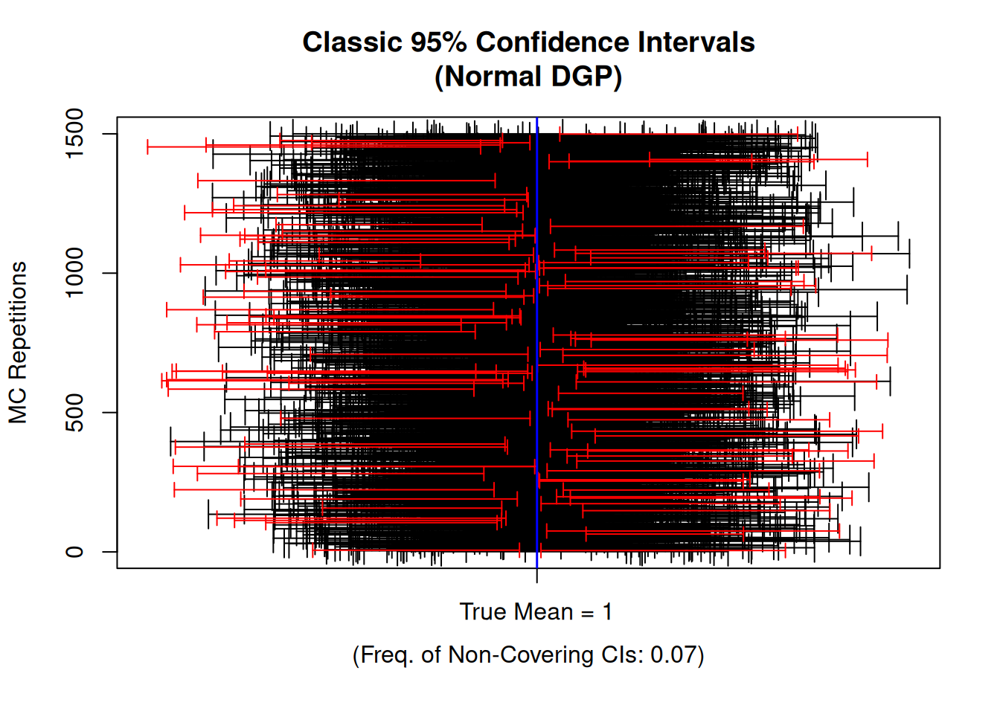
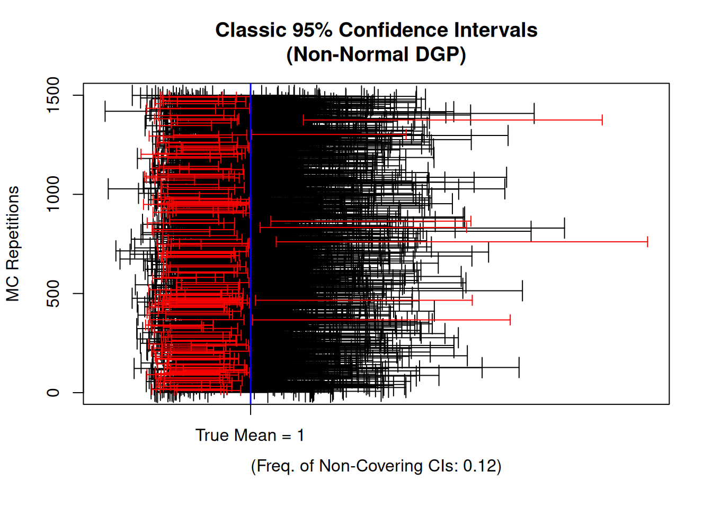
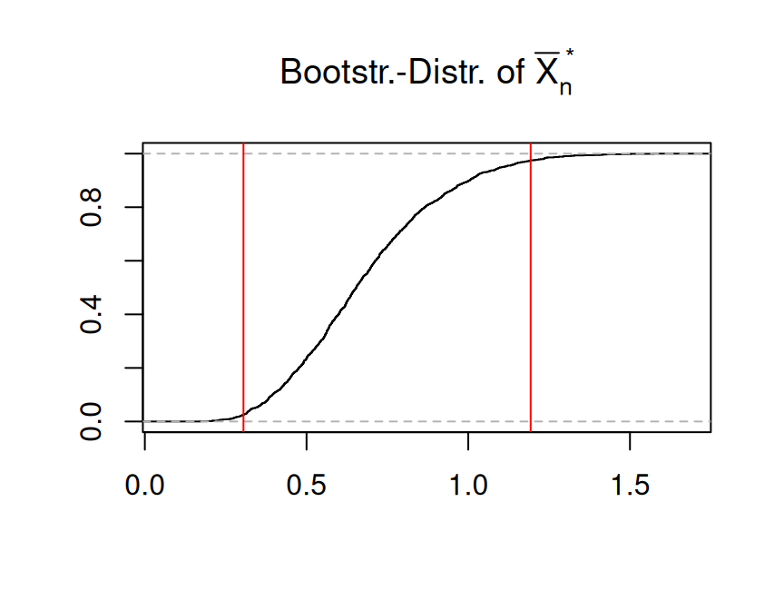
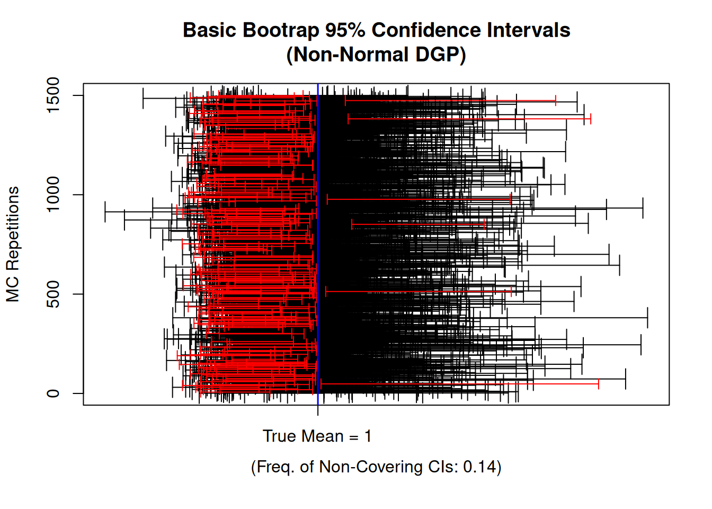
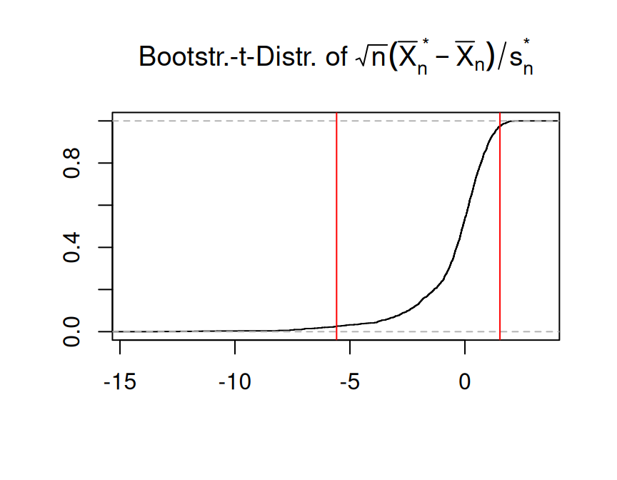
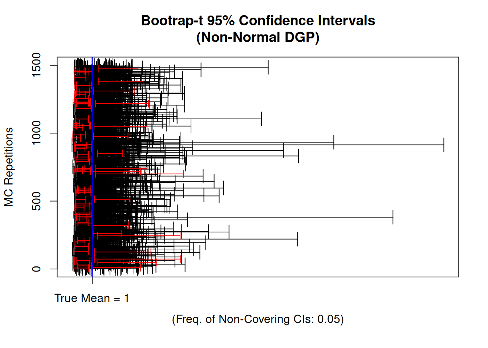

observedSample <- c(5.20, 4.80, 5.30, 4.60,
6.10, 5.40, 5.80, 5.50)
myecdf_fun <- ecdf(observedSample)
plot(myecdf_fun, main="")
The bootstrap is an important tool of modern statistical analysis. It establishes a general framework for simulation-based statistical inference. In simple situations the uncertainty of an estimate may be gauged by analytical calculations (asymptotic statistics) leading, for example, to the construction of (approximate) confidence intervals. The bootstrap replaces complicated and often inaccurate approximations to biases, variances and other measures of uncertainty by computer simulations.
Some literature:
The bootstrap method is attributed to Bradley Efron, who received the International Prize in Statistics (the Nobel price of statistics) for his seminal works on the bootstrap method.
Suppose that we wish to invest a fixed sum of money in two financial assets that yield returns of \(X\) and \(Y.\) These returns \(X\) and \(Y\) are random with
We want to invest a fraction \(\alpha\in(0,1)\) in \(X\) and invest the remaining \(1-\alpha\) in \(Y.\)
Our aim is to minimize the variance (risk) of our investment, i.e., we want to minimize \[ Var\left(\alpha X + (1-\alpha)Y\right). \] One can show that the value \(\alpha\) that minimizes this variance is \[ \alpha = \frac{\sigma^2_Y - \sigma_{XY}}{\sigma^2_X + \sigma^2_Y - 2\sigma_{XY}}. \tag{3.1}\] Using a data set that contains past measurements \[ ((X_1,Y_1),\dots,(X_n,Y_n)) \] for \(X\) and \(Y,\) we can estimate the unknown \(\alpha\) by plugging in estimates of the variances and covariances \[ \hat\alpha_n = \frac{\hat\sigma^2_{Y,n} - \hat\sigma_{XY,n}}{\hat\sigma^2_{X,n} + \hat\sigma^2_{Y,n} - 2\hat\sigma_{XY,n}} \tag{3.2}\] with \[ \begin{align*} \hat{\sigma}^2_{X,n}&=\frac{1}{n}\sum_{i=1}^n\left(X_i-\bar{X}\right)^2\\ \hat{\sigma}^2_{Y,n}&=\frac{1}{n}\sum_{i=1}^n\left(Y_i-\bar{Y}\right)^2\\ \hat{\sigma}_{XY,n}&=\frac{1}{n}\sum_{i=1}^n\left(X_i-\bar{X}\right)\left(Y_i-\bar{Y}\right), \end{align*} \] where \(\bar{X}=\frac{1}{n}\sum_{i=1}^nX_i\) and \(\bar{Y}=\frac{1}{n}\sum_{i=1}^nY_i.\)
It is natural to wish to quantify the accuracy of our estimator \[ \hat\alpha_n\approx \alpha. \]
For instance, to construct a confidence interval we need to know the standard error of the estimator \(\hat\alpha\), \[ \sqrt{Var(\hat\alpha_n)} = \operatorname{SE}(\hat\alpha_n)=? \] However, deriving an explicit expression for \(\operatorname{SE}(\hat\alpha)\) is difficult here due to the definition of \(\hat\alpha_n\) in Equation 3.2 which contains variance estimators also in the denominator.
In cases as described above, we are happy to use the Basic Bootstrap Method (Section 3.3) which allows estimating \(\operatorname{SE}(\hat\alpha)\) by resampling from the data observed; i.e. without the need of an explicit formula of a consistent estimator of \(\operatorname{SE}(\hat\alpha).\) The Basic Bootstrap Method is found to be as accurate as the standard asymptotic normality results which, however, require an explicit formula of an estimator of \(\operatorname{SE}(\hat\alpha)\) to become useful.
If we have a consistent estimator for the \(\operatorname{SE}(\hat\alpha),\) then we can make use of this estimator by applying the Bootstrap-\(\mathbf{t}\) Method (Section 3.4). The Bootstrap-\(t\) Method is found to be more accurate than the standard asymptotic normality results.
The distribution of a real-valued random variable \(X\) can be completely described by its (cumulative) distribution function
The sample analogue of \(F\) is the so-called empirical distribution function, which is an important tool of statistical inference.
Let
\[
X_1,\dots,X_n\overset{\text{i.i.d.}}\sim X
\] denote a real-valued random sample with \(X\sim F,\) and let \(1_{(\cdot)}\) denote the indicator function, i.e., \[
\begin{align*}
1_{(\text{TRUE})} &=1\quad\text{and}\quad 1_{(\text{FALSE})}=0.
\end{align*}
\]
Properties of the ECDF:
\(F_n\) is a monotonically increasing right-continuous step function that is bounded between zero and one, \[ 0\le F_n(x)\le 1, \] where \[ F_n(x)=\left\{ \begin{array}{ll} 0&\text{ if }x < X_{(1)}\\ 1&\text{ if }x\ge X_{(n)}\\ \end{array} \right. \] where \[ X_{(1)}\leq X_{(2)}\leq \dots \leq X_{(n)} \] denotes the order-statistic.
\(F_n\) is itself a distribution function according to Definition 3.1; namely, the distribution function of the discrete random variable \(X^*,\) where
\[ X^*\in\{X_1,\dots,X_n\} \] and \[ P(X^*=X_i)=\frac{1}{n}\quad\text{for each}\quad i=1,\dots,n. \] Thus \[ \begin{align*} F_n(x) &=\frac{1}{n} \sum_{i=1}^n 1_{(X_i\leq x)}\\[2ex] &= P\left(X^*\leq x\right). \end{align*} \]
Example 3.1 (Computing the empirical distribution function \(F_n\) in R)
Some data, i.e. an observed realization of a random sample \(X_1,\dots,X_n\overset{\text{i.i.d}}{\sim}F:\)
| \(i\) | \(X_i\) |
|---|---|
| 1 | 5.20 |
| 2 | 4.80 |
| 3 | 5.30 |
| 4 | 4.60 |
| 5 | 6.10 |
| 6 | 5.40 |
| 7 | 5.80 |
| 8 | 5.50 |
Corresponding empirical distribution function using R:
observedSample <- c(5.20, 4.80, 5.30, 4.60,
6.10, 5.40, 5.80, 5.50)
myecdf_fun <- ecdf(observedSample)
plot(myecdf_fun, main="")
The R function ecdf() returns a function that gives the values of \(F_n(x):\)
## Note: ecdf() returns a function that can be evaluated!
myecdf_fun(5.0)[1] 0.25Sampling (iid) from the empirical distribution function \(F_n\) is equivalent to resampling (with replacement and with equal probabilities) data points from the observed data observedSample. The following code generates three “bootstrap” samples from \(F_n\colon\)
n <- length(observedSample)
resample1 <- sample(observedSample,
size = n,
replace = TRUE)
resample1[1] 5.3 4.8 5.3 5.4 5.8 6.1 5.4 5.4resample2 <- sample(observedSample,
size = n,
replace = TRUE)
resample2[1] 5.4 4.6 5.3 5.3 4.6 6.1 5.2 5.2resample3 <- sample(observedSample,
size = n,
replace = TRUE)
resample3[1] 4.8 5.2 6.1 5.2 5.2 4.6 6.1 5.8\(F_n(x)\) depends on the i.i.d. random sample \(X_1,\dots,X_n\) and thus is itself a random function.
We obtain \[ nF_n(x)\sim B(n, p=F(x))\quad\text{for each}\quad x\in\mathbb{R} \tag{3.3}\]
I.e., \(nF_n(x)\) has a binomial distribution with parameters:
Note: The result in Equation 3.3 holds for any \(F.\) Therefore, \(nF_n,\) and thus also \(F_n,\) is called distribution free
Equation 3.3 implies that \[ \begin{align*} \mathbb{E}(nF_n(x))& = np = nF(x)\\[2ex] \Rightarrow \quad \mathbb{E}(F_n(x))& = p = F(x)\\[2ex] \Rightarrow \quad \operatorname{Bias}(F_n(x))& = \mathbb{E}(F_n(x)) - F(x) =0\\ \end{align*} \] and \[ \begin{align*} Var(nF_n(x))& = np(1-p) = nF(x)(1-F(x))\\[2ex] \Rightarrow \quad Var(F_n(x))& = \frac{nF(x)(1-F(x))}{n^2}=\frac{F(x)(1-F(x))}{n}. \end{align*} \] Therefore, \[ \begin{align*} \operatorname{MSE}(F_n(x)) & = (\operatorname{Bias}(F_n(x)))^2 + Var(F_n(x))\\[2ex] & =\frac{F(x)(1-F(x))}{n}\\[2ex] \Rightarrow\quad\operatorname{MSE}(F_n(x))&\to 0\quad\text{as}\quad n\to\infty \end{align*} \] pointwise for each \(x\in\mathbb{R}.\)
This allows us to conclude that \[ \begin{align*} F_n(x) & \to_{m.s.} F(x)\quad\text{as}\quad n\to\infty\\[2ex] \Rightarrow \quad F_n(x) & \to_{p} F(x)\quad\text{as}\quad n\to\infty \end{align*} \] pointwise for each \(x\in\mathbb{R}.\)
That is, \(F_n(x)\) is a pointwise consistent estimator of \(F(x)\) for each \(x\in\mathbb{R}.\)
The Clivenko-Cantelli Theorem 3.1 states that \(F_n\) is even an uniformly consistent estimator of \(F.\)
The basic idea of the bootstrap is to replace random sampling from the true (unknown) population \(F\) (infeasible Monte Carlo simulation) by random sampling from the empirical distribution \(F_n\) (feasible “Monte Carlo simulation”).
Sampling from the population distribution \(F\) (infeasible Monte Carlo simulation)
The random sample \(X_1,\dots,X_n\overset{\text{i.i.d.}}{\sim}X\) with \(X\sim F\) is generated by drawing observations independently and with replacement from the unknown population distribution function \(F\). That is, for each interval \([a,b]\) the probability of drawing an observation in \([a,b]\) is given by \[
P(X\in [a,b])=F(b)-F(a).
\] Let \(\theta_0\) denote a distribution parameter of \(F\) which we want to estimate, and let \(\hat\theta_n\) denote an estimator of \(\theta_0.\)
If we would know \(F,\) we could generate arbitrarily many realizations of the estimator \(\hat{\theta}_n\) \[
\hat{\theta}_{n,1}, \hat{\theta}_{n,2}, \dots, \hat{\theta}_{n,m}
\] with \(m\to\infty\) and do inference about \(\theta_0\) using these realizations.
Unfortunately, we don’t know \(F,\) thus Monte Carlo inference is infeasible.
The idea of the bootstrap is to make the infeasible Monte Carlo inference feasible:
Instead of random sampling from \(F,\) which is infeasible (as we don’t know \(F\)), the bootstrap uses random sampling from the known empirical distribution function \(F_n\) to generate arbitrarily many bootstrap realizations of the estimator \(\hat{\theta}_n\) \[
\hat{\theta}^*_{n,1}, \hat{\theta}^*_{n,2}, \dots, \hat{\theta}^*_{n,m}
\] with \(m\to\infty\) and do inference about \(\theta_0\) using these bootstrap realizations.
This is justified asymptotically since for large \(n,\) the empirical distribution \(F_n\) is “close” to the unknown distribution \(F\) (Glivenko-Cantelli Theorem 3.1). That is, for \(n\rightarrow\infty\) the relative frequency of observations \(X_i\) in \([a,b]\) converges to \(P(X\in [a,b])\)
\[
\begin{align*}
\underbrace{\frac{1}{n}\sum_{i=1}^n1_{(X_i\in[a,b])}}_{=F_n(b)-F_n(a)}&\to_p \underbrace{P(X\in [a,b])}_{=F(b)-F(a)}
\end{align*}
\]
The basic bootstrap method is a nonparametric bootstrap method since the method does not require a specific distributional (i.e. parametric) assumption on \(F.\) The basic bootstrap method is often also called:
Setup:
i.i.d. sample \(\mathcal{S}_n=\{X_1,\dots,X_n\},\) where \(X_1,\dots,X_n\overset{\text{i.i.d.}}{\sim}X\) with real valued \(X\sim F.\)
The distribution \(F\) is depends on an unknown parameter \(\theta_0.\)
The data \(X_1,\dots,X_n\) is used to estimate \(\theta_0\in\mathbb{R}.\)
Thus, the estimator is a function of the random sample \[ \hat\theta_n\equiv \hat\theta(X_1,\dots,X_n). \]
Moreover, for simplicity let us focus on unbiased and \(\boldsymbol{\sqrt{n}}\)-consistent estimators, i.e.
Inference (approximate for \(\boldsymbol{n\to\infty}\)): In order to provide standard errors, construct confidence intervals, and perform tests of hypothesis, we need to know the distribution of \[ \sqrt{n}\left(\hat\theta_n-\theta_0\right)\quad\text{as}\quad n\to\infty. \] I.e. we need to know the limit of the distribution function \[ H_{n}(x)=P\left(\sqrt{n}\left(\hat\theta_n-\theta_0\right)\leq x\right)\quad\text{as}\quad n\to\infty. \]
We could use asymptotic statistics to derive this limit. For instance, using the Lindeberg-Lévy CLT, we may be able to show that the limit of \(H_{n}(x)\) is the distribution function of the normal distribution with mean zero and asymptotic variance \(\lim_{n\to\infty}n\cdot Var\big(\hat\theta_n\big).\)
However, deriving a useful, explicit expression of the asymptotic variance \(\lim_{n\to\infty}n\cdot Var\big(\hat\theta_n\big)\) can be very hard (see Section 3.1). Then, one is happy to use the bootstrap instead of doing painful math. Moreover, specific versions of the Bootstrap (Section 3.4) can be even more accurate then an asymptotic normality result.
By the Clivenko-Cantelli (Theorem 3.1) the bootstrap estimates \[
\hat\theta_{n,1}^*,\hat\theta_{n,2}^*,\dots,\hat\theta_{n,m}^*
\] allow us to approximate the bootstrap distribution
\[
H^{Boot}_{n}(x)=P\left(\left.\sqrt{n}\left(\hat\theta^*_n-\hat\theta_n\right)\leq x\right|\mathcal{S}_n\right)
\] arbitrarily well, i.e., \[
\sup_{x\in\mathbb{R}}\left|H^{Boot}_{n,m}(x)-H^{Boot}_{n}(x)\right|\to_{a.s} 0\quad\text{as}\quad m\to\infty,
\] where \[
H^{Boot}_{n,m}(x)=\frac{1}{m}\sum_{j=1}^m1_{\left(\sqrt{n}\left(\hat\theta^*_{n,j}-\hat\theta_n\right)\leq x\right)}
\] denotes the empirical distribution function based on the \(\hat\theta_{n,1}^*,\hat\theta_{n,2}^*,\dots,\hat\theta_{n,m}^*\) centered by \(\hat{\theta}_n\) and scaled by \(\sqrt{n}.\)
Since we can choose \(m\) arbitrarily large, we can effectively ignore the approximation error between \(H^{Boot}_{n,m}(x)\) and \(H^{Boot}_{n}(x)\) and proceed as if \[ H^{Boot}_{n,m}(x)\overset{(m\to\infty)}{=}H^{Boot}_{n}(x)\quad\text{for all}\quad x. \]
The crucial question is, however, whether the (effectively known) bootstrap distribution \[ H^{Boot}_{n}(x)=P\left(\left.\sqrt{n}\left(\hat\theta^*_n-\hat\theta_n\right)\leq x\;\right|\;\mathcal{S}_n\right) \] can be used to estimate the limit distribution \[ H_{n}(x)=P\left(\sqrt{n}\left(\hat\theta_n-\theta_0\right)\leq x\right)\quad\text{as}\quad n\to\infty? \] This is a basic requirement called bootstrap consistency. If a bootstrap method is inconsistent, you shall not use it in practice.
The bootstrap does not always work.
A necessary condition for the use of the bootstrap is the consistency of the bootstrap approximation.
The bootstrap is called consistent if, for large \(n\), the bootstrap distribution of \[ \sqrt{n}\big(\hat{\theta}^*_n -\hat{\theta}_n\big)|\mathcal{S}_n \] is a good approximation of the distribution of \[ \sqrt{n}\big(\hat{\theta}_n-\theta_0\big); \] i.e., if \[ \underbrace{\text{distribution}\left(\sqrt{n}\big(\hat{\theta}^*_n -\hat{\theta}_n\big)\ |{\cal S}_n\right)}_{H_n^{Boot}}\approx \underbrace{\text{distribution}\left(\sqrt{n}\big(\hat{\theta}_n-\theta_0\big)\right)}_{H_n}. \] for large \(n.\)
The following definition states this more precisely.
Luckily, the standard bootstrap is consistent in a large number of statistical problems. Typically, the bootstrap is consistent if the following two requirements hold:
Theorem 1 in Mammen (1992) shows that the basic bootstrap is consistent if \(\sqrt{n}(\hat{\theta}_n-\theta_0)\to_d\mathcal{N}(0,v_0^2),\) under the assumption that the bootstrap sampling process (e.g. i.i.d.) equals the original sampling process.
The standard bootstrap will usually fail if one of the above conditions is violated.
Note: In order to deal with more complex sampling schemes alternative bootstrap procedures have been proposed in the literature (e.g. the block-bootstrap in case of time-series data).
Setup:
For doing inference (approximate for \(\boldsymbol{n\to\infty}\)) about \(\boldsymbol{\mu_0}\) we need to know the (asymptotic) distribution of \[ \sqrt{n}\left(\bar{X}_n -\mu_0\right)\quad\text{as}\quad n\to\infty. \]
Let us now check, whether the Bootstrap distribution \[ H^{Boot}_{n}(x)=P\left(\left.\sqrt{n}\left(\bar{X}^*_n-\bar{X}_n\right)\leq x\;\right|\;\mathcal{S}_n\right) \] is a legit alternative to \(H^{Asymp}_n(x).\) I.e. we check whether we can use \(H^{Boot}_{n}(x)\) as an alternative for estimating the limit distribution \(\Phi_{v}(x)=\Phi_{\sigma_0}(x).\)
Before we answer this question theoretically (see Section 3.3.1.2 and Section 3.3.1.3), we check it empirically using an artifical data example. This is then, of course, not a generally valid mathematical proof.
Let us consider the following (usually unknown) specific setup: \[ X_1,\dots,X_n\overset{\text{i.i.d.}}{\sim}X, \] where
This setup implies (see Example 3.2) that
When doing classic asymptotic inference (see Example 3.2), we would use the feasible \[ H^{Asymp}_n(x)=\Phi_{\hat\sigma_n}(x) \] to estimate the (usually unknown) asymptotic limit distribution \(\Phi_{2}(x).\)
Let us now check (by simulation of artifical data) whether the bootstrap distribution \[ H^{Boot}_{n}(x)=P\left(\left.\sqrt{n}\left(\bar{X}^*_n-\bar{X}_n\right)\leq x\;\right|\;\mathcal{S}_n\right) \] can be a legit alternative for estimating the (usually unknown) \(\Phi_{2}(x).\)
The following R-code generates artifical data \[
\mathcal{S}_n=\{X_1,\dots,X_n\}
\] by (i.i.d.) sampling \(n=100\) data points from a \(\chi^2\)-distribution with \(\operatorname{df}=2.\) The first six data points are shown in Table 3.1.
set.seed(123)
observedSample <- rchisq(n = 100, df = 2)| \(i\) | \(X_i\) |
|---|---|
| 1 | 0.36 |
| 2 | 3.39 |
| 3 | 3.24 |
| 4 | 4.90 |
| 5 | 1.76 |
| 6 | 5.33 |
| … | … |
mean(observedSample) \(=\) 1.8
Basic Bootstrap Method:
The observed sample \[ {\cal S}_n=\{X_1,\dots,X_n\} \] is taken as underlying empirical “population” from which we generate i.i.d. bootstrap samples \[ X_1^*,\dots,X_n^*. \] by drawing observations independently and with replacement from \({\cal S}_n=\{X_1,\dots,X_n\}.\)
Each realization of the bootstrap sample leads to a new realization of the bootstrap estimator \[
\bar{X}^*_n=\bar{X}^*(X_1^*,\dots,X_n^*).
\] The following R code generates realizations of \[
\bar{X}^*_{n,1},\dots,\bar{X}^*_{n,m}.
\] for \(m=10000\) Bootstrap replications.
# Number of bootstrap replications
m <- 10000
# Container to save the bootstrap estimates
Xbar_boot <- vector(mode = "double", length = m)
# Basic Bootstrap algorithm
for(k in seq_len(m)){
bootSample <- sample(x = observedSample,
size = n,
replace = TRUE)
Xbar_boot[k] <- mean(bootSample)
}
# Pinting the first three elements of Xbar_boot:
Xbar_boot[1:3][1] 0.6649553 2.2564627 1.8510396Based on the realizations of \[ \bar{X}^*_{n,1},\dots,\bar{X}^*_{n,m}, \] we can compute the empirical Bootstrap distribution function \[ H^{Boot}_{n,m}(x)=\frac{1}{m}\sum_{j=1}^m 1_{\left(\sqrt{n}\left(\bar{X}^*_{n,j}-\bar{X}_n\right)\leq x\right)}, \] which approximates (arbirary well as \(m\to\infty\)) the bootstrap distribution \[ H^{Boot}_n(x)=P\left(\left.\sqrt{n}\left(\bar{X}^*_n-\bar{X}_n\right)\;\right|\;\mathcal{S}_n\right) \]
Thus, by choosing a large \(m\) (e.g. \(m=10000\)) we proceed as if \[ H^{Boot}_{n,m}(x)=H^{Boot}_{n}(x)\quad\text{for all}\quad x. \]
If \[ H^{Boot}_{n,m}(x)\approx \Phi_{2}(x)\quad\text{for all}\quad x, \] then we can use \(H^{Boot}_{n,m}(x)\) (as an alternative to \(H^{Asymp}_{n}(x)\)) to do inference about \(\mu_0.\)
The following R-code computes and compares graphically the following three distribution functions:
ecdf( sqrt(n) * (Xbar_boot - Xbar) ) n <- length(observedSample)
Xbar <- mean(observedSample)
m <- 10000 # number of bootstrap samples
Xbar_boot_vec <- vector(mode = "double", length = m)
## Bootstrap algorithm
for(k in seq_len(m)){
bootSample <- sample(x = observedSample,
size = n,
replace = TRUE)
Xbar_boot_vec[k] <- mean(bootSample)
}
plot(ecdf( sqrt(n) * (Xbar_boot_vec - Xbar) ),
xlab = "", ylab = "",
main = "Bootstrap Distribution vs Normal Limit Distribution")
curve(pnorm(x, mean = 0, sd = sqrt(4)), col = "red", add = TRUE)
curve(pnorm(x, mean = 0, sd = sqrt(var(observedSample))), col = "blue", lty = 2, add = TRUE)
legend("topleft",
legend = c(expression(H['n,m']^{'Boot'}),
expression(H['n']^{'Asymp'}),
"Normal Distr. (Mean = 0 and SD = 2)"),
col = c("black", "blue", "red"), lty = c(1,2,1))Figure 3.1 shows that both \[ H^{Boot}_{n,m}(x)\quad\text{and}\quad H^{Asymp}_{n}(x) \] provide good approximations to the (usually unknown) asymptotic limit distribution \(\Phi_{2}(x)\).
The bootstrap distribution \[ \begin{align*} H^{Boot}_{n,m}(x)&=\frac{1}{m}\sum_{j=1}^m 1_{\left(\sqrt{n}\left(\bar{X}^*_{n,j}-\bar{X}_n\right)\leq x\right)}\\[2ex] &\overset{m\to\infty}{=}P\left(\left.\sqrt{n}\left(\bar{X}^*_n-\bar{X}_n\right)\;\right|\;\mathcal{S}_n\right)=H^{Boot}_n(x) \end{align*} \] can be computed directly from \(\bar{X}^*_{n,1},\dots,\bar{X}^*_{n,m}.\) There’s no need for deriving a formula \(v^2=\sigma_0^2\) for the asymptotic variance as it is necessary for \(H^{Asymp}_{n}(x)\) (see Example 3.2).
In fact, using \[
H^{Boot}_n(x) = P\left(\left.\sqrt{n}\left(\bar{X}^*_n-\bar{X}_n\right)\;\right|\;\mathcal{S}_n\right),
\] we can derive an estimator for the asymptotic variance \[
v^2=\lim_{n\to\infty}Var\big(\sqrt{n}\big(\bar{X}_n-\mu_0\big)\big)
\] directly from \(\bar{X}^*_{n,1},\dots,\bar{X}^*_{n,m}\colon\)
\[
\begin{align*}
\hat{v}^2_{Boot,n}
&=Var\left(\left.\sqrt{n}\left(\bar{X}^*_n-\bar{X}_n\right)\;\right|\;\mathcal{S}_n\right)\\[2ex]
&=n \; Var\left(\left.\left(\bar{X}^*_n-\bar{X}_n\right)\;\right|\;\mathcal{S}_n\right)\\[2ex]
&\left[\text{Conditionally on $\mathcal{S}_n,$ $\bar{X}_n$ is constant}\right]\\[2ex]
&=n \; Var\left(\left.\bar{X}^*_n\;\right|\;\mathcal{S}_n\right),
\end{align*}
\] where the unknown \(Var\big(\left.\bar{X}^*_n\;\right|\;\mathcal{S}_n\big)\) can be consistently (for \(m\to\infty\)) estimated by \[
\begin{align*}
\widehat{Var}_m\left(\left.\bar{X}^*_n\;\right|\;\mathcal{S}_n\right) = \frac{1}{m}\sum_{j=1}^m \left(\bar{X}^*_{n,j} - \left(\frac{1}{m}\sum_{j=1}^m\bar{X}^*_{n,j}\right)\right)^2
\end{align*}
\]
The estimator \[ \hat{v}^2_{Boot,n}=n \; \widehat{Var}_m\left(\left.\bar{X}^*_n\;\right|\;\mathcal{S}_n\right) \] can be computed directly from \(\bar{X}^*_{n,1},\dots,\bar{X}^*_{n,m}.\) There’s no need for deriving a formula \(v^2=\sigma_0^2\) for the asymptotic variance as in Example 3.2. For our artifical data example, we have thatBy choosing a large \(m\) (e.g. \(m=10000\)) we proceed as if \[ \widehat{Var}_m\big(\left.\bar{X}^*_n\;\right|\;\mathcal{S}_n\big)=Var\big(\left.\bar{X}^*_n\;\right|\;\mathcal{S}_n\big) \]
n * var(Xbar_boot_vec) \(=\) 3.41
This yields an estimate of the standard error \(\operatorname{SE}\left(\bar{X}_n\right)\)
sd(Xbar_boot_vec) \(=\) 0.18
Computing the Basic Bootstrap estimate of the standard error of an estimator is typically that simple: Compute the standard deviation of \(\hat\theta^*_{n,1},\dots,\hat\theta^*_{n,m}\) for a large \(m.\)
Let \[ \mathcal{S}_n=\{X_1,\dots,X_n\} \] where \[ X_1,\dots,X_n\overset{\text{i.i.d.}}{\sim}X\quad\text{with}\quad X\sim F, \] and let \[ X_1^*,\dots,X_n^*\overset{\text{i.i.d.}}{\sim}X^*\quad\text{with}\quad X^*\sim F_n, \] where \(F_n\) denotes the ecdf computed from \(X_1,\dots,X_n.\)
In this chapter we begin with the theoretical consideration of the Bootstrap distribution \[ H^{Boot}_{n}(x)=P\left(\left.\sqrt{n}\left(\bar{X}^*_n-\bar{X}_n\right)\leq x\;\right|\;\mathcal{S}_n\right). \]
We begin with focusing on the mean and the variance and check whether for large \(n\) (\(b\to\infty\)) the mean and the variance of \(H^{Boot}_{n}\) equals the mean and the variance of \(H_n.\)
In the bootstrap literature one frequently finds the notation \[ \mathbb{E}^*(\,\cdot\,),\;Var^*(\,\cdot\,),\;\text{and}\;P^*(\,\cdot\,) \] to denote the conditional expectation \[ \mathbb{E}^*(\,\cdot\,)=\mathbb{E}(\,\cdot\,|\mathcal{S}_n), \] the conditional variance \[ Var^*(\,\cdot\,)=Var(\,\cdot\,|\mathcal{S}_n), \] and the conditional probability \[ P^*(\,\cdot\,)=P(\,\cdot\,|\mathcal{S}_n), \] given the sample \({\cal S}_n.\)
The bootstrap focuses on the bootstrap distribution, i.e. on the conditional distribution of \[ \sqrt{n}(\bar X^*_n -\bar X_n)|\mathcal{S}_n. \]
We can analyze and simulate the bootstrap distribution of \(\sqrt{n}(\bar X^*_n -\bar X_n)|\mathcal{S}_n,\) since we know 🤟 the discrete distribution of the conditional random variables \[ X^*|\mathcal{S}_n \] even though, we do not know the distribution of \(X\sim F.\)
The possible values of the discrete random variable \(X^*|\mathcal{S}_n\) are \[ X^*|\mathcal{S}_n\in\{X_1,\dots,X_n\}, \] and each of these values are equally probable: \[ \begin{align*} P^*(X^*=X_1)&= P(X^*=X_1|{\cal S}_n) = \frac{1}{n} \\[2ex] P^*(X^*=X_2)&= P(X^*=X_2|{\cal S}_n) = \frac{1}{n} \\[2ex] &\vdots\\[2ex] P^*(X^*=X_n)&= P(X^*=X_n|{\cal S}_n) = \frac{1}{n}. \end{align*} \]
Thus, we know the whole distribution of \(X_i^*|\mathcal{S}_n\) and, therefore, can compute, for instance, easily its conditional mean and its variance:
The conditional mean of \(X^*\) given \({\cal S}_n\) is \[ \begin{align*} \mathbb{E}^*(X^*) &=\mathbb{E}(X^*|{\cal S}_n)\\[2ex] &=\frac{1}{n}X_1+\frac{1}{n}X_2+\dots+\frac{1}{n}X_n\\[2ex] &=\bar X_n. \end{align*} \] I.e., the empirical mean \(\bar{X}_n=\frac{1}{n}\sum_{i=1}^nX_i\) of the original sample \(X_1,\dots,X_n\) is the “population” mean of the bootstrap sample \(X^*_1,\dots,X^*_n.\)
The conditional variance of \(X^*\) given \({\cal S}_n\) is \[ \begin{align*} Var^*(X^*) &=Var(X^*|{\cal S}_n)\\[2ex] &=\mathbb{E}\left((X^* - \mathbb{E}(X^*|{\cal S}_n))^2|{\cal S}_n\right)\\[2ex] &=\frac{1}{n}\sum_{i=1}^n (X_i-\bar X_n)^2\\[2ex] &=\hat\sigma^2_n. \end{align*} \] I.e., the empirical variance \(\hat\sigma^2_n=\frac{1}{n}\sum_{i=1}^n (X_i-\bar X)^2\) of the original sample \(X_1,\dots,X_n\) is the “population” variance of the bootstrap sample \(X^*_1,\dots,X^*_n.\)
For any (measurable) function \(g\) we have \[ \mathbb{E}^*(g(X^*))=\mathbb{E}(g(X^*)|\mathcal{S}_n)=\frac{1}{n}\sum_{i=1}^n g(X_i). \] For instance, \(g(X_i)=1_{(X_i\leq x)}.\)
Conditioning on the observed sample \(\mathcal{S}_n=\{X_1,\dots,X_n\}\) is crucial.
The unconditional distribution of \(X^*\) is equal to the unknown distribution \(F.\) This can be seen from the following derivation: \[ \begin{align*} P(X^*\leq x) &= P(1_{(X^*\leq x)}=1) \\[2ex] &= P(1_{(X^*\leq x)}=1) \cdot 1 + P(1_{(X^*\leq x)}=0) \cdot 0\\[2ex] &= \mathbb{E}\left(1_{\left(X^*\leq x\right)}\right)\\[2ex] &= \mathbb{E}\left({\color{blue}\mathbb{E}\left(1_{\left(X^*\leq x\right)}|\mathcal{S}_n\right)}\right)\quad[\text{{\color{blue}law of iterated expectations}}]\\[2ex] &= \mathbb{E}\left({\color{blue}\frac{1}{n}\sum_{i=1}^n 1_{\left(X_i\leq x\right)}}\right)\quad[\text{{\color{blue}from our derivations above}}]\\[2ex] &\quad[\text{Using that $X_1\dots,X_n\overset{\text{i.i.d.}}{\sim}X$ with $X\sim F\colon$}]\\[2ex] &= \frac{n}{n}\mathbb{E}\left(1_{\left(X\leq x\right)}\right)\\[2ex] &= P(1_{(X\leq x)}=1) \cdot 1 + P(1_{(X\leq x)}=0) \cdot 0\\[2ex] &= P\left(X\leq x\right)=F(x) \end{align*} \]
Using our above results, \[ \begin{align*} \mathbb{E}(X^*|\mathcal{S}_n)&=\bar{X}_n\\[2ex] Var(X^*|\mathcal{S}_n) &=\frac{1}{n}\sum_{i=1}^n(X_i-\bar{X}_n)^2, \end{align*} \] we can consider the conditional mean and the conditional variance of \[ \sqrt{n}\left.\left(\bar X^*_n-\bar{X}_n\right)\;\right|\;\mathcal{S}_n, \] for a given realization of \(\mathcal{S}_n.\)
The conditional mean of \(\sqrt{n}\left(\bar X^*_n-\bar{X}_n\right)\) given \(\mathcal{S}_n\) is \[ \begin{align*} \mathbb{E}^*\left(\sqrt{n}\left(\bar X^*_n-\bar{X}_n\right)\right) &=\mathbb{E}\left(\left.\sqrt{n}\left(\bar X^*_n-\bar{X}_n\right)\right|{\cal S}_n\right)\\[2ex] &=\sqrt{n}\,\mathbb{E}\left(\left.\bar X^*_n-\bar{X}_n\right|{\cal S}_n\right)\\[2ex] &=\sqrt{n}\left(\mathbb{E}\left(\bar X^*_n|{\cal S}_n\right)- \mathbb{E}\left(\bar{X}_n|{\cal S}_n\right)\right)\\[2ex] &=\sqrt{n}\left(\frac{1}{n}\sum_{i=1}^n{\color{red}\mathbb{E}\left(X^*_i|{\cal S}_n\right)}- \frac{1}{n}\sum_{i=1}^n{\color{blue}\mathbb{E}\left(X_i|{\cal S}_n\right)}\right)\\[2ex] &=\sqrt{n}\left(\frac{n}{n}{\color{red}\bar{X}_n} - \frac{1}{n}\sum_{i=1}^n{\color{blue}X_i}\right)\\[2ex] &=\sqrt{n}\left(\bar{X}_n - \bar{X}_n\right)\\[2ex] &= 0%\\[2ex] %\Leftrightarrow\quad \mathbb{E}\left(\bar X^*_n|{\cal S}_n\right) & = \mathbb{E}\left(\bar{X}_n|{\cal S}_n\right). \end{align*} \]
The conditional variance of \(\sqrt{n}\left(\bar X^*_n-\bar{X}_n\right)\) given \(\mathcal{S}_n\) is \[ \begin{align*} Var^*\left(\sqrt{n}\left(\bar X^*_n-\bar{X}_n\right)\right) &=Var\left(\sqrt{n}\left(\bar X^*_n-\bar{X}_n\right)|{\cal S}_n\right)\\[2ex] &=n\,Var\left(\big(\bar X^*_n-\bar{X}_n\big)|{\cal S}_n\right)\\[2ex] &[\text{Conditionally on a given}\\ &\text{ realization of $\mathcal{S}_n,$ $\bar{X}_n$ is a constant:}]\\[2ex] &=n\,Var\big(\bar X^*_n|{\cal S}_n\big)\\[2ex] &=n\,Var\Big(\frac{1}{n}\sum_{i=1}^n X_i^*\Big|{\cal S}_n\Big)\\ &=n\,\frac{1}{n^2}\sum_{i=1}^n Var\big(X_i^*|{\cal S}_n\big)\\ &=n\,\frac{n}{n^2} Var\big(X_i^*|{\cal S}_n\big)\\ &=Var\big(X_i^*|{\cal S}_n\big)\\[2ex] &=\frac{1}{n}\sum_{i=1}^n(X_i-\bar{X}_n)^2\quad[\text{derived above}]\\[2ex] &=\hat\sigma^2_n, \end{align*} \] where \[ \hat\sigma^2_n\to_p \sigma_0^2\quad\text{as}\quad n\to\infty. \]
For large \(n\) (\(n\to\infty\)) the bootstrap distribution, i.e. the distribution of \[ \sqrt{n}\left(\bar X^*_n-\bar{X}_n\right)|\mathcal{S}_n \] and the distrubtion of \[ \sqrt{n}\left(\bar{X}_n-\mu_0\right) \] have both mean zero and variance \(\sigma^2_0.\)
That is, as \(n\to\infty,\) both distributions become equal with respect to their means and variances.
In this chapter we continue our theoretical consideration of the Bootstrap distribution \[ H^{Boot}_{n}(x)=P\left(\left.\sqrt{n}\left(\bar{X}^*_n-\bar{X}_n\right)\leq x\;\right|\;\mathcal{S}_n\right), \] but consider now the total distribution—not only mean and variance.
The characteristic function …
… uniquely determines its associated probability distribution \(F\) of \(X.\)
… can be used to easily derive (all) the moments of a random variable by \[ \mathbb{E}(X^n) = \mathcal{i}^n \left.\frac{d^n}{d t^n}\psi_X(t)\right|_{t=0} \]
… is often used to prove that two distributions are equal.
The characteristic function of \(\Phi_{\sigma_0}\) is \[ \begin{align*} \psi_{\Phi_{\sigma_0}}(t) &=\exp\left(-\frac{1}{2}\sigma_0^2\,t^2\right)\\[2ex] &=\lim_{n\to\infty}\left(1-\frac{1}{n}\,\frac{1}{2}\,\sigma_0^2 \, t^2\right)^n \end{align*} \tag{3.6}\]
The characteristic function of \(\sum_{i=1}^nW_i,\) where \(W_1,\dots,W_n\overset{\text{i.i.d.}}{\sim}W,\) is \[ \psi_{\sum_{i=1}^nW_i}(t)=\big(\psi_{W}(t)\big)^n \tag{3.7}\]
Let \(W\) be a random variable with \(\mathbb{E}(W)=0\) and \(Var(W)=\sigma_W^2.\) Then, we have that (see Equation (26.11) in Billingsley (1995)) \[ \psi_W(t)=1-\frac{1}{2}\sigma_W^2 \, t^2 + \lambda(t), \tag{3.8}\] where \(|\lambda(t)|\leq t^2\,\mathbb{E}\left(\min(|t|\,|W|^3, W^2)\right).\)
The following is taken from Example 3.1 in Shao and Tu (1996). First, we sketch the proof for the Lindeberg-Lévy CLT. Second, we use this principle to sketch the proof for bootstrap consistency.
Let \[ X_1,\dots,X_n\overset{\text{i.i.d.}}{\sim}X \] where \(X\sim F\) has
It follows then from the Lindeberg-Lévy CLT that \[ H_n(x)=P\left(\sqrt{n}\left(\bar{X}_n-\mu_0\right)\leq x\right)\to\Phi_{\sigma_0}(x)=\Phi\left(\frac{x}{\sigma_0}\right)\quad\text{as}\quad n\to\infty, \] for all continuity points \(x\in\mathbb{R}.\) This CLT-result can be proven by showing that the characteristic function of \(H_n\) tends the characteristic function of \(\Phi_{\sigma_0}.\)
To see this, rewrite \[ \begin{align*} \sqrt{n}\left(\bar{X}_n-\mu_0\right) & = \sum_{i=1}^n\overbrace{\;\left(\frac{X_i-\mu_0}{\sqrt{n}}\right)\;}^{=W_{i,n}}\\[2ex] & = \sum_{i=1}^n W_{i,n} \end{align*} \] where \[ \begin{align*} &W_{1,n},\dots,W_{n,n}\overset{\text{i.i.d.}}{\sim}W_n,\\[2ex] &\mathbb{E}(W_{n})=\mathbb{E}\left(\frac{X_i-\mu_0}{\sqrt{n}}\right)=\frac{\mathbb{E}(X_i)-\mu_0}{\sqrt{n}}=0\quad\text{for all}\quad n,\quad\text{and}\\[2ex] &Var(W_{n})=Var\left(\frac{X_i-\mu_0}{\sqrt{n}}\right)=\frac{1}{n}Var(X_i-\mu_0)=\frac{1}{n}Var(X_i)=\frac{1}{n}\sigma_0^2. \end{align*} \]
Therefore, by Equation 3.7 together with Equation 3.8 \[ \begin{align*} \psi_{\sqrt{n}\left(\bar{X}_n-\mu_0\right)}(t) &=\psi_{\sum_{i=1}^n W_{i,n}}(t)\\[2ex] &=\left(\psi_{W_{n}}(t)\right)^n\\[2ex] &=\left(1-\frac{1}{2}\,\frac{1}{n}\sigma_0^2 \, t^2 + \lambda_n(t)\right)^n, \end{align*} \] where \[ \begin{align*} |\lambda_n(t)| &\leq t^2\,\mathbb{E}\left(\min\left(|t|\,\left|W_{n}\right|^3, \left|W_{n}\right|^2\right)\right)\\[2ex] &= t^2\,\mathbb{E}\left(\min\left(|t|\,\left|\frac{X-\mu_0}{\sqrt{n}}\right|^3, \left|\frac{X-\mu_0}{\sqrt{n}}\right|^2\right)\right)\\[2ex] &= t^2\,\mathbb{E}\left(\min\big(|t|\,n^{-3/2}\left|X-\mu_0\right|^3, n^{-1}\left|X-\mu_0\right|^2\big)\right)\\[2ex] &[\text{for sufficiently large $n$ and any fixed, finite $t$}\\ &\text{(Note: relevant $t$-values to get all moments are}\\ &\text{values around zero.):}]\\[2ex] &= t^2\,\mathbb{E}\left(|t|\,n^{-3/2}\left|X-\mu_0\right|^3\right)\\[2ex] &= n^{-3/2}\underbrace{\;t^2\,|t|\,\mathbb{E}\left(\left|X-\mu_0\right|^3\right)}_{\texttt{constant}}\\[2ex] %\Rightarrow\quad n |\lambda_n(t)|& \leq n \cdot n^{-3/2}\cdot \texttt{constant}\\[2ex] %\Rightarrow\quad n |\lambda_n(t)|& \leq n^{-1/2} \cdot \texttt{constant}. \Rightarrow\quad |\lambda_n(t)|& \leq n^{-3/2}\cdot \texttt{constant}\\[2ex] \Rightarrow\quad |\lambda_n(t)|& =O(n^{-3/2}) \\[2ex] &=o(n^{-1})\\[2ex] \end{align*} \] The latter step follows since sequences of the order of magnitude \(n^{-3/2}\) are of a smaller order of magnitude than sequences of the order of magnitude \(n^{-1}.\)
That is, for large \(n\) (\(n\to\infty\)) and fixed finite \(t,\) \[
\begin{align*}
\psi_{\sqrt{n}\left(\bar{X}_n-\mu_0\right)}(t)
&=\Big(1-\;\underbrace{\frac{1}{2}\,\frac{1}{n}\sigma_0^2 \, t^2}_{=O(n^{-1})}\; +\; \underbrace{\lambda_n(t)}_{=o(n^{-1})}\Big)^n\\[2ex]
\end{align*}
\] the \(\lambda_n(t)=o(n^{-1})\) term becomes negligible in comparison to the \(\frac{1}{2}\,\frac{1}{n}\sigma_0^2 \, t^2=O(n^{-1})\) term and the constant term (i.e. the \(1\)) such that
\[
\begin{align*}
\lim_{n\to\infty}\psi_{\sqrt{n}\left(\bar{X}_n-\mu_0\right)}(t)
&= \lim_{n\to\infty}\psi_{\sum_{i=1}^n W_{i,n}}(t)\\[2ex]
&= \lim_{n\to\infty}\left(1-\frac{1}{n}\,\frac{1}{2}\,\sigma_0^2 \, t^2 + \lambda_n(t)\right)^n\\[2ex]
&= \lim_{n\to\infty}\left(1-\frac{1}{n}\,\frac{1}{2}\,\sigma_0^2 \, t^2\right)^n\\[2ex]
&=\exp\left(-\frac{1}{2}\sigma_0^2\,t^2\right)\\[2ex]
&=\psi_{\Phi_{\sigma_0}}(t),
\end{align*}
\] where the latter step follows from Equation 3.6.
OK, we have shown that \(H_n\) tends to \(\Phi_{\sigma_0}\) by showing that the characteristic function of \(H_n\) tends to that of \(\Phi_{\sigma_0}.\) That is, we just sketched the proof for the Lindeberg-Lévy CLT.**
To show bootstrap consistency we need to show that \(H_n^{Boot}\) also tends to \(\Phi_{\sigma_0}.\) To do so, we can mimic the above proof sketch and show that the characteristic function of \(H_n^{Boot}\) tends to that of \(\Phi_{\sigma_0}.\)
Let \[ X_1^*,\dots,X_n^*\overset{\text{i.i.d.}}{\sim}X^* \] where \(X^*\sim F_n\) has
Rewrite \[ \begin{align*} \sqrt{n}\left.\left(\bar{X}^*_n- \bar{X}_n\right)\right|\mathcal{S}_n & = \sum_{i=1}^n\left.\;\overbrace{\left(\frac{X^*_i- \bar{X}_n}{\sqrt{n}}\right)}^{W^*_n}\right.|\mathcal{S}_n\\[2ex] & = \sum_{i=1}^n W^*_{i,n}|\mathcal{S}_n \end{align*} \] where
\[ \begin{align*} &W^*_{1,n}|\mathcal{S}_n,\dots,W^*_{n,n}|\mathcal{S}_n\overset{\text{i.i.d.}}{\sim}W_n^*|\mathcal{S}_n,\\[2ex] &\mathbb{E}(W^*_{n}|\mathcal{S}_n)=\mathbb{E}\left(\left.\frac{X_i^*-\bar{X}_n}{\sqrt{n}}\right|\mathcal{S}_n\right)\\[2ex] &\phantom{\mathbb{E}(W^*_{n}|\mathcal{S}_n)}=\frac{\mathbb{E}(X_i^*|\mathcal{S}_n)-\bar{X}_n}{\sqrt{n}}=0\quad\text{for all}\quad n,\quad\text{and}\\[2ex] &Var(W^*_{n}|\mathcal{S}_n)=Var\left(\left.\frac{X_i^*-\bar{X}_n}{\sqrt{n}}\right|\mathcal{S}_n\right)\\[2ex] &\phantom{Var(W^*_{n}|\mathcal{S}_n)}=\frac{1}{n}Var(X_i^*-\bar{X}_n|\mathcal{S}_n)=\frac{1}{n}Var(X_i^*|\mathcal{S}_n)=\frac{1}{n}\hat\sigma_n^2 \end{align*} \]
Therefore, by Equation 3.7 together with Equation 3.8 \[ \begin{align*} \psi_{\sqrt{n}\left(\bar{X}^*_n-\bar{X}_n\right)|\mathcal{S}_n}(t) &=\psi_{\sum_{i=1}^n W_{i,n}^*|\mathcal{S}_n}(t)\\[2ex] &=\left(\psi_{W_{n}^*|\mathcal{S}_n}(t)\right)^n\\[2ex] &=\left(1-\frac{1}{2}\,\frac{1}{n}{\color{darkgreen}\hat{\sigma}_n^2} \, t^2 + {\color{red}\lambda_n^*(t)}\right)^n, \end{align*} \] where \[ \begin{align*} |\lambda_n^*(t)| &\leq |t^2|\,{\color{blue}\mathbb{E}^*}\left(\min\big(|t|\,n^{-3/2}\left|X^*_1-\bar{X}_n\right|^3, n^{-1}\left|X_1^* - \bar{X}_n\right|^2\big)\right)\\[2ex] &= |t^2|\,{\color{blue}\frac{1}{n}\sum_{i=1}^n}\left(\min\big(|t|\,n^{-3/2}\left|X_i-\bar{X}_n\right|^3, n^{-1}\left|X_i - \bar{X}_n\right|^2\big)\right). \end{align*} \] By the Marcinkiewicz strong law of large numbers, we obtain that \[ \begin{align*} n{\color{red}|\lambda^*_n(t)|}&\to_{a.s.} 0\quad\text{as}\quad n\to\infty\\[2ex] \Leftrightarrow\quad {\color{red}|\lambda^*_n(t)|}&=o_{a.s.}(1). \end{align*} \]
Moreover, \[ {\color{darkgreen}\hat\sigma_n^2} = \frac{1}{n}\sum_{i=1}^n\left(X_i-\bar{X}_n\right)^2\to_{a.s.}\sigma_0^2\quad\text{as}\quad n\to\infty. \]
Thus, we have that (using Equation 3.6) \[ \begin{align*} \psi_{\sqrt{n}\left(\bar{X}^*_n-\bar{X}_n\right)|\mathcal{S}_n}(t) \to_{a.s.}& \lim_{n\to\infty}\left(1-\frac{1}{2}\,\frac{1}{n}\sigma_0^2 \, t^2\right)^n\\[2ex] &=\exp\left(-\frac{1}{2}\sigma_0^2\,t^2\right)\\[2ex] &=\psi_{\Phi_{\sigma_0}}(t). \end{align*} \] This implies that the limit (\(n\to\infty\)) of \(H_n^{Boot}\) is \(\Phi_{\sigma_0}\) almost surely.
Hence, we have shown that the basic bootstrap is consistent for doing inference about \(\mu_0\) using \(\bar{X}_n.\)
In the following section, we show how to build a confidence interval using the bootstrap distribution of a general estimator \(\hat\theta_n.\)
Setup (Classic Asymptotic Statistics):
An approximate \((1-\alpha)\times 100\%\) confidence interval is then given by \[ \left[ \hat{\theta}_n - z_{1-\frac{\alpha}{2}}\frac{\hat v_n}{\sqrt{n}}, \hat{\theta}_n + z_{1-\frac{\alpha}{2}}\frac{\hat v_n}{\sqrt{n}} \right], \] where \(z_{1-\frac{\alpha}{2}}\) denotes the \((1-\alpha)/2\) quantile of the standard Normal distribution \((z_{0.975}=1.96).\) This confidence interval is approximate, since it is only asymptotically justified, and, thus, is generally not exact in finite samples.
Note: Often, however, very difficult to obtain a consistent estimator \(\hat v_n\) of \(v_0\) (see Section 3.1). Statistical inference is then usually based on the bootstrap confidence intervals.
Setup:
In the following, we will assume that the bootstrap is consistent; i.e. that \[ \begin{align*} \text{distribution}(\sqrt{n}(\hat{\theta}^*_n -\hat{\theta}_n)|{\cal S}_n) &\approx \text{distribution}(\sqrt{n}(\hat{\theta}_n-\theta_0))\\ \text{short:}\quad\quad\sqrt{n}(\hat{\theta}^*_n-\hat{\theta}_n)|{\cal S}_n &\overset{d}{\approx} \sqrt{n}(\hat{\theta}_n -\theta_0) \end{align*} \] if \(n\) is sufficiently large.
Caution: This is not always the case and in cases of doubt one needs to show this property.
Algorithm (3 Steps):
Generate \(m\) bootstrap estimates
\[
\hat\theta_{n,1}^*,\dots,\hat\theta_{n,m}^*
\] by repeatedly (\(m\) times) drawing bootstrap samples \(X_{1}^*,\dots,X_{n}^*\) independently and with replacement from \(\mathcal{S}_n=\{X_1,\dots,X_n\}\) and computing \[
\hat{\theta}^\ast_{n,j}=\hat{\theta}^\ast_{j}(X_{1}^*,\dots,X_{n}^*),\quad j=1,\dots,m.
\]
Use the \(m\) bootstrap estimates \(\hat\theta_{n,1}^*,\dots,\hat\theta_{n,m}^*\) to approximate the \(\frac{\alpha}{2}\) and the \(1-\frac{\alpha}{2}\) quantiles of the conditional distribution of \(\hat{\theta}^*\) given \({\cal S}_n.\) This can be done with negligible approximation error (for \(m\) large) using the empirical quantiles \[ \hat q^*_{n,p}=\left\{ \begin{array}{ll} \hat\theta^*_{n,(\lfloor mp\rfloor+1)}, &\text{if $mp$ is not an integer}\\ (\hat\theta^*_{n,(mp)}+\hat\theta^*_{n,(mp+1)})/2,&\text{if $mp$ is an integer} \end{array}\right. \tag{3.9}\] for \(p=\frac{\alpha}{2}\) or \(p=1-\frac{\alpha}{2},\) where \(\hat\theta_{n,(j)}^*\) denotes the \(j\)th order statistic \[ \hat\theta_{n,(1)}^* \leq \hat\theta_{n,(2)}^*\leq \dots\leq \hat\theta_{n,(m)}^*, \] and \(\lfloor mp\rfloor\) denotes the greatest whole number less than or equal to \(mp\) (e.g. \(\lfloor 4.9\rfloor = 4\)).
The \((1-\alpha)\times 100\%\) basic bootstrap confidence interval is then given by \[ \left[2\hat{\theta}_n-\hat q^*_{n,1-\frac{\alpha}{2}}, 2\hat{\theta}_n-\hat q^*_{n,\frac{\alpha}{2}}\right], \tag{3.10}\] where
The quantiles \(\hat q^*_{n,p}\) are those of the distribution \[ G_{n,m}^{Boot}(x)=\frac{1}{m}\sum_{j=1}^m1_{\left(\hat{\theta}^*_{n,j}\leq x\right)}. \] However, we’ll treat the quantiles \(\hat q^*_{n,p}\) as quantiles of the distribution \[ G_{n}^{Boot}(x)=P\left(\hat{\theta}^*_{n}\leq x\,\big|\,\mathcal{S}_n\right), \] since for large \(m\) (\(m\to\infty\)) the difference between \(G_{n,m}^{Boot}\) and \(G_{n}^{Boot}\) is negligible (Glivenko-Cantelli Theorem 3.1) and we can choose \(m\) to be large.
Justifying the Basic Bootstrap CI (Equation 3.10) for \(\theta_0\):
The following three approximate statements \((\approx (1-\alpha))\) are exact for \(m\to\infty:\) \[ \begin{align*} &P^*\left(\hat q^*_{n,\frac{\alpha}{2}} \leq \hat{\theta}^*_n \leq \hat q^*_{n,1-\frac{\alpha}{2}}\right) \approx 1-\alpha\\[2ex] \Leftrightarrow\; & P^*\left(\hat q^*_{n,\frac{\alpha}{2}}-\hat{\theta}_n \leq\hat{\theta}^*_n -\hat{\theta}_n \leq \hat q^*_{n,1-\frac{\alpha}{2}}-\hat{\theta}_n\right) \approx 1-\alpha\\[2ex] \Leftrightarrow\; & P^*\left( \sqrt{n}(\hat q^*_{n,\frac{\alpha}{2}}-\hat{\theta}_n)\leq{\color{red}\sqrt{n}(\hat{\theta}_n^*-\hat{\theta}_n)}\leq \sqrt{n}(\hat q^*_{n,1-\frac{\alpha}{2}}-\hat{\theta}_n)\right) \approx 1-\alpha \end{align*} \]
Due to the assumed consistency of the bootstrap, we have that for large \(n\) \[ {\color{red}\sqrt{n}(\hat{\theta}^*_n-\hat{\theta}_n)}|{\cal S}_n\overset{d}{\approx} {\color{blue}\sqrt{n}(\hat{\theta}_n-\theta_0)}. \] Therefore, for large \(n\) and large \(m,\) \[ \begin{align*} &P\left( \sqrt{n}(\hat q^*_{n,\frac{\alpha}{2}}-\hat{\theta}_n)\leq{\color{blue}\sqrt{n}(\hat{\theta}_n-\theta_0)}\leq \sqrt{n}(\hat q^*_{n,1-\frac{\alpha}{2}}-\hat{\theta}_n)\right)\approx 1-\alpha\\[2ex] \Leftrightarrow\; &P\left(\hat q^*_{n,\frac{\alpha}{2}}-\hat{\theta}_n\leq\hat{\theta}_n-\theta_0 \leq \hat q^*_{n,1-\frac{\alpha}{2}}-\hat{\theta}_n\right) \approx 1-\alpha\\[2ex] \Leftrightarrow\; &P\left(\hat q^*_{n,\frac{\alpha}{2}}-2\hat{\theta}_n\leq-\theta_0 \leq \hat q^*_{n,1-\frac{\alpha}{2}}-2\hat{\theta}_n\right) \approx 1-\alpha\\[2ex] %\Rightarrow &P\left(\hat{\theta}_n-(\hat q^*_{n,1-\frac{\alpha}{2}}-\hat{\theta}_n)\le \theta_0\le \hat{\theta}_n-(\hat q^*_{n,\frac{\alpha}{2}}-\hat{\theta}_n)\right)\approx 1-\alpha\\[2ex] \Leftrightarrow\; &P\left(2\hat{\theta}_n-\hat q^*_{n,1-\frac{\alpha}{2}}\le \theta_0\le 2\hat{\theta}_n- \hat q^*_{n,\frac{\alpha}{2}}\right)\approx 1-\alpha\\[2ex] \Leftrightarrow\; &P\left(\theta_0\in\left[2\hat{\theta}_n-\hat q^*_{n,1-\frac{\alpha}{2}}, \; 2\hat{\theta}_n-\hat q^*_{n,\frac{\alpha}{2}}\right]\right)\approx 1-\alpha. \end{align*} \] This demonstrates that the basic bootstrap confidence interval in Equation 3.10 \[ \left[2\hat{\theta}_n-\hat q^*_{n,1-\frac{\alpha}{2}}, \; 2\hat{\theta}_n-\hat q^*_{n,\frac{\alpha}{2}}\right], \] is indeed an asymptotically (\(n\to\infty\) and \(m\to\infty\)) valid \((1-\alpha)\times 100\%\) confidence interval.
Setup:
Setup:
Let \(z_{\alpha/2}\) and \(z_{1-\alpha/2}\) denote the \(\alpha/2\) and the \((1-\alpha/2)\)-quantile of \(\mathcal{N}(0,1).\) Since \(z_{\alpha/2} = -z_{1-\alpha/2},\) we have that \[ \begin{align*} &P\left(-z_{1-\frac{\alpha}{2}}\le \frac{\sqrt{n}(\bar X_n -\mu_0)}{\hat{\sigma}_n}\le z_{1-\frac{\alpha}{2}}\right)\approx 1-\alpha\\[2ex] \Rightarrow\quad &P\left(-z_{1-\frac{\alpha}{2}}\frac{\hat{\sigma}_n}{\sqrt{n}}\le \bar X_n -\mu_0\le z_{1-\frac{\alpha}{2}}\frac{\hat{\sigma}_n}{\sqrt{n}}\right)\approx 1-\alpha\\[2ex] \Rightarrow\quad &P\left(\bar X_n -z_{1-\frac{\alpha}{2}}\frac{\hat{\sigma}_n}{\sqrt{n}}\le \mu_0\le \bar X_n +z_{1-\frac{\alpha}{2}}\frac{\hat{\sigma}_n}{\sqrt{n}} \right)\approx 1-\alpha \end{align*} \]
The bootstrap offers an alternative method for constructing approximate \((1-\alpha)\times 100\%\) confidence intervals. We already know that the bootstrap is consistent in this situation (see Section 3.3.1.3).
Draw \(m\) bootstrap samples (e.g. \(m=10,000\)) and calculate the corresponding estimates \[ \bar X^*_{n,1},\bar X^*_{n,2},\dots,\bar X^*_{n,m}. \]
Compute the empirical quantiles \(\hat q^*_{n,\frac{\alpha}{2}}\) and \(\hat q^*_{n,1-\frac{\alpha}{2}}\) from \(\bar X^*_{n,1},\bar X^*_{n,2},\dots,\bar X^*_{n,m}\) using Equation 3.9.
Compute the approximate \((1-\alpha)\times 100\%\) basic bootstrap confidence interval according to Equation 3.10: \[ \left[2\bar X_n -\hat q^*_{n,1-\frac{\alpha}{2}}, 2\bar X_n -\hat q^*_{n,\frac{\alpha}{2}}\right], \] where
In many situations it is possible to get more accurate bootstrap confidence intervals by using the bootstrap-\(t\) method (one also speaks of the “studentized bootstrap”). As the basic bootstrap method, the bootstrap-\(t\) method is a nonparametric bootstrap method. The construction relies on so-called (asymptotically) pivotal statistics.
Setup (as in classic asymptotic statistics):
Exact pivotal statistics are rare and not available in most statistical or econometric applications.
It is, however, often possible to construct an asymptotically pivotal statistic. Consider, for instance, an asymptotically normal \(\sqrt{n}\)-consistent estimator \(\hat{\theta}_n\) of \(\theta_0,\) i.e. \[ \sqrt{n}(\hat{\theta}_n-\theta_0)\rightarrow_d\mathcal{N}(0,v_0^2), \] where \(v^2=\lim_{n\to\infty}Var(\sqrt{n}(\hat{\theta}_n-\theta_0))\) denotes the asymptotic variance. Additionally assume that it is possible to use the data in order to construct a consistent estimator of \(v_0^2\) \[ \hat v_n^2 \rightarrow_p v_0^2\quad\text{as}\quad n\to\infty, \] which implies (Continuous Mapping Theorem) that also \[ \hat v_n \rightarrow_p v_0\quad\text{as}\quad n\to\infty. \] Then, \[ T_n= \sqrt{n}\frac{(\hat{\theta}_n-\theta_0)}{\hat v_n} \] is asymptotically pivotal, since \[ T_n = \sqrt{n}\frac{(\hat{\theta}_n-\theta_0)}{\hat v_n}\rightarrow_d \mathcal{N}(0,1),\quad n\to\infty. \]
Let \(\mathcal{S}_n=\{X_1,\dots,X_n\}\) be a i.i.d. random sample with \(X_i\sim X\) for all \(i=1,\dots,n,\) with mean \(\mathbb{E}(X)=\mu_0\), variance \(0<Var(X)=\sigma_0^2<\infty\), and finite fourth moment \(\mathbb{E}(|X|^4)=\beta<\infty\) for estimating \(\sigma_0^2.\)
If \(X\) is normally distributed, we obtain \[ T_n=\frac{\sqrt{n}(\bar X_n-\mu_0)}{s_n}\sim t_{n-1}\quad\text{for any}\quad n=2,3,\dots \] with \(s_n^2=\frac{1}{n-1} \sum_{i=1}^n (X_i-\bar X_n)^2\), where \(t_{n-1}\) denotes the \(t\)-distribution with \(n-1\) degrees of freedom. We can conclude that \(T_n\) is exact pivotal.
If \(X\) is not normally distributed, the central limit theorem implies that \[
T_n=\frac{\sqrt{n}(\bar X_n-\mu_0)}{s_n}\rightarrow_d\mathcal{N}(0,1),\quad\text{as}\quad n\to\infty.
\] In this case \(T_n\) is an asymptotically pivotal statistic.
Note: One can replace \(s_n = \sqrt{\frac{1}{n-1} \sum_{i=1}^n (X_i-\bar X_n)^2}\) by \(\hat\sigma_n = \sqrt{\frac{1}{n} \sum_{i=1}^n (X_i-\bar X_n)^2},\) since both are asymptotically equivalent, i.e. \[
\frac{s_n}{\hat\sigma_n}=\sqrt{\frac{n}{n-1}}\to_p 1\quad\text{as}\quad n\to\infty.
\]
The general idea of the bootstrap-\(t\) method relies on approximating the unknown distribution of \[ T_n = \sqrt{n}\frac{(\hat{\theta}_n-\theta_0)}{\hat v_n} \] by the approximable (via bootstrap resampling) conditional distribution of \[ T_n^*\big|\mathcal{S}_n =\sqrt{n}\frac{(\hat{\theta}_n^*-\hat{\theta}_n)}{\hat v_n^*}\Big|\mathcal{S}_n, \] given \(\mathcal{S}_n=\{X_1,\dots,X_n\},\) where the standard deviation estimate \(\hat{v}_n^*\) is computed from the bootstrap sample \(X_1^*,\dots,X_n^*,\) i.e. \[ \hat v_n^*\equiv \hat{v}(X_1^*,\dots,X_n^*). \]
If the basic bootstrap is consistent and if the variance estimator \(\hat{v}_n^2\) is consistent, then also the bootstrap-\(t\) method is consistent.
Setup (as in classic asymptotic statistics):
Algorithm (3 Steps):
Based on an i.i.d. re-sample \(X_1^*,\dots,X_n^*\) from \(\mathcal{S}_n=\{X_1,\dots,X_n\},\) calculate the bootstrap estimates \[ \hat{\theta}^*_n\equiv \hat{\theta}^*(X_1^*,\dots,X_n^*) \] and \[ \hat v^*_n\equiv \hat v^*(X_1^*,\dots,X_n^*) \] and the bootstrap statistic \[ \begin{align*} T_n^*&=\sqrt{n}\frac{\hat{\theta}^*_n-\hat{\theta}_n}{\hat v^*_n}. \end{align*} \] Repeating this yields \(m\) (e.g. \(m=10,000\)) many bootstrap estimators \[ T_{n,1}^*,T_{n,2}^*, \dots, T_{n,m}^*. \] conditionally on \(\mathcal{S}_n.\)
Compute the empirical \(\frac{\alpha}{2}\) and \(1-\frac{\alpha}{2}\) quantiles \(\hat q^*_{n,\frac{\alpha}{2}}\) and \(\hat q^*_{n,1-\frac{\alpha}{2}}\) of the bootstrap estimates \(T_{n,1}^*,T_{n,2}^*, \dots, T_{n,m}^*\) (see Equation 3.9).
Compute the approximate \((1-\alpha)\times 100\%\) bootstrap-\(t\) confidence interval
\[
\left[\hat{\theta}_n - \hat q^*_{n,1-\frac{\alpha}{2}} \left(\frac{\hat v_n}{\sqrt{n}}\right),\;
\hat{\theta}_n - \hat q^*_{n, \frac{\alpha}{2}} \left(\frac{\hat v_n}{\sqrt{n}}\right)\right],
\tag{3.11}\] where
Justifying the Bootstrap-\(\boldsymbol{t}\) CI (Equation 3.11) for \(\boldsymbol{\theta_0}\):
The bootstrap estimates \[ T_{n,1}^*,T_{n,2}^*, \dots, T_{n,m}^* \] yield the empirical bootstrap distribution \[ H_{n,m}^{Boot}(x)=\frac{1}{m}\sum_{j=1}^m1_{\left(T_{n,j}^*\;\leq\; x\right)} \] which approximates the bootstrap distribution \[ H_{n}^{Boot}(x)=P\left(\left.T_{n}^*\leq x\;\right|\;\mathcal{S}_n\right) \] arbitrarily precise as \(m\to\infty\) (Glivenko-Cantelli Theorem 3.1).
Thus, the empirical bootstrap quantiles \(\hat q^*_{n,\frac{\alpha}{2}}\) and \(\hat q^*_{n,1-\frac{\alpha}{2}}\) of \(H_{n,m}^{Boot}\) are indeed consistent (\(m\to\infty\)) for the quantiles \(\hat q_{n,\frac{\alpha}{2}}\) and \(\hat q_{n,1-\frac{\alpha}{2}}\) of the bootstrap distribution \(H_{n}^{Boot}.\) This implies, for large \(m,\) \[ P^*\left(\hat q^*_{n,\frac{\alpha}{2}}\leq {\color{red}\sqrt{n}\frac{\hat{\theta}^*_n-\hat{\theta}_n}{\hat v^*_n}} \leq \hat q^*_{n,1-\frac{\alpha}{2}}\right) \approx 1-\alpha. \]
By the (assumed) bootstrap consistency, we have for large \(n\) that \[ \left.{\color{red}\sqrt{n}\frac{\hat{\theta}^*-\hat{\theta}}{\hat v_n^*}}\right|\mathcal{S}_n\overset{d}{\approx} {\color{blue}\sqrt{n}\frac{\hat{\theta}_n-\theta_0}{v_0}}. \] Therefore, for large \(n\) and large \(m,\) \[ \begin{align*} & P\left(\hat q^*_{n,\frac{\alpha}{2}}\leq {\color{blue}\sqrt{n}\frac{\hat{\theta}_n-\theta_0}{v_0}} \leq \hat q^*_{n,1-\frac{\alpha}{2}}\right) \approx 1-\alpha\\[2ex] \Leftrightarrow & P\left(\hat q^*_{n,\frac{\alpha}{2}} \left(\frac{v_0}{\sqrt{n}}\right)\leq \hat{\theta}_n-\theta_0 \leq \hat q^*_{n,1-\frac{\alpha}{2}} \left(\frac{v_0}{\sqrt{n}}\right) \right) \approx 1-\alpha\\[2ex] \Leftrightarrow & P\left(- \hat{\theta}_n + \hat q^*_{n,\frac{\alpha}{2}} \left(\frac{v_0}{\sqrt{n}}\right) \leq -\theta_0 \leq - \hat{\theta}_n + \hat q^*_{n,1-\frac{\alpha}{2}} \left(\frac{v_0}{\sqrt{n}}\right)\right) \approx 1-\alpha\\[2ex] \Leftrightarrow & P\left(\hat{\theta}_n - \hat q^*_{n,1-\frac{\alpha}{2}}\left(\frac{v_0}{\sqrt{n}}\right)\leq \theta_0 \leq \hat{\theta}_n - \hat q^*_{n,\frac{\alpha}{2}} \left(\frac{v_0}{\sqrt{n}}\right) \right) \approx 1-\alpha\\[2ex] \Leftrightarrow & P\left(\theta_0\in\left[\hat{\theta}_n - \hat q^*_{n,1-\frac{\alpha}{2}} \left(\frac{\hat v_n}{\sqrt{n}}\right),\; \hat{\theta}_n - \hat q^*_{n, \frac{\alpha}{2}} \left(\frac{\hat v_n}{\sqrt{n}}\right)\right]\right) \approx 1-\alpha. \end{align*} \] Thus, the approximate \((1-\alpha)\times 100\%\) bootstrap-\(t\) confidence interval (Equation 3.11) \[ \left[\hat{\theta}_n - \hat q^*_{n,1-\frac{\alpha}{2}} \left(\frac{\hat v_n}{\sqrt{n}}\right),\; \hat{\theta}_n - \hat q^*_{n, \frac{\alpha}{2}} \left(\frac{\hat v_n}{\sqrt{n}}\right)\right], \] is indeed an asymptotic (i.e. approximate) \((1-\alpha)\times 100\%\) CI.
Here \(\hat\theta_n = \bar{X}_n\) and the estimator of the asymptotic variance \(\sigma_0^2=\lim_{n\to\infty}n Var(\bar{X}_n)\) is \[ \hat\sigma_n^2 = \frac{1}{n}\sum_{i=1}^n\left(X_i-\bar{X}_n\right)^2. \]
Algorithm:
Usually, the bootstrap-\(t\) provides a gain in accuracy over the basic bootstrap. The reason is that the approximation of the law of \(T_n\) by the bootstrap law of \[ \left.\frac{\sqrt{n}(\hat{\theta}^*_n-\hat{\theta}_n)}{\hat{v}^*_n}\;\right|\;\mathcal{S}_n \] is more direct and hence more accurate (\(\hat{v}^*_n\) depends also on the bootstrap sample—not on the original sample) than by the bootstrap law of \[ \left.\sqrt{n}(\hat{\theta}^*_n-\hat{\theta}_n)\;\right|\;\mathcal{S}_n. \]
The use of pivotal statistics and the corresponding construction of bootstrap-\(t\) confidence intervals is motivated by theoretical results which show that under mild conditions the bootstrap-\(t\) methods are second order accurate.
Consider generally \((1-\alpha)\times 100\%\) confidence intervals of the form \[ [L_n,U_n] \] of \(\theta\). The lower, \(L_n\), and upper bounds, \(U_n\), of such intervals are determined from the data and are thus random, \[ L_n\equiv L(X_1,\dots,X_n) \] \[ U_n\equiv U(X_1,\dots,X_n) \] and their accuracy depends on the particular procedure applied (e.g. basic bootstrap vs. bootstrap-\(t\)).
If the distribution of \(\hat\theta_n\) is asymptotically normal and the bootstrap is consistent, then under some additional regularity conditions it can usually be shown that
The difference between first and second-order accuracy is not just a theoretical nicety. In many practically important situations second-order accurate intervals lead to much better approximations.
Proofs required for this type of results is technically difficult since Edgeworth expansions are involved. The investigation of the accuracy of the bootstrap estimators is still an active field (see, for instance, Koike (2024)).
In this chapter we consider two different bootstrap resampling procedures that can be applied in linear regression analysis:
Setup: Linear regression model \[ Y_i=X_i^T\beta_0 + \varepsilon_i,\quad i=1,\dots,n, \] where \(Y_i\in\mathbb{R}\) denotes the response (or “dependent”) variable and \[ X_i:=(\underbrace{X_{i1}}_{=1},X_{i2},\ldots,X_{ip})^T\in\mathbb{R}^p \] denotes the vector of predictor variables. In the following, we differentiate between a random design and a fixed design.
The least squares estimator \(\hat\beta_n\in\mathbb{R}^p\) is given by \[ \begin{align*} \hat\beta_n &=\left(\frac{1}{n}\sum_{i=1}^n X_iX_i^T\right)^{-1}\frac{1}{n}\sum_{i=1}^n X_iY_i. \end{align*} \]
Using that \(Y_i=X_i^\top\beta_0+\varepsilon_i,\) one can derive that \[ \begin{align*} \hat\beta_n &=\beta_0+\left(\frac{1}{n}\sum_{i=1}^n X_iX_i^T\right)^{-1}\frac{1}{n}\sum_{i=1}^n X_i\varepsilon_i. \end{align*} \]
Under a random design (Definition 3.6), we assume that there exists a non-singular (thus invertible) matrix \(M\) \[ M=\mathbb{E}(X_iX_i^T). \] This implies that the following matrix \(Q\) is also non-singular: \[ \begin{align*} Q &=\mathbb{E}(\varepsilon_i^2X_iX_i^T)\\[2ex] &=\mathbb{E}(\mathbb{E}(\varepsilon_i^2X_iX_i^T|X_i))\\[2ex] &=\mathbb{E}(\sigma^2_0(X_i)X_iX_i^T\mathbb{E}(1|X_i))\\[2ex] &=\mathbb{E}(\sigma^2_0(X_i)X_iX_i^T) \end{align*} \]
In case of homoskedastic errors, we have that \[ \begin{align*} Q &=\mathbb{E}(\sigma^2_0(X_i)X_iX_i^T)\\ &=\sigma^2_0\;\mathbb{E}(X_iX_i^T)\\[2ex] &=\sigma^2_0\;M. \end{align*} \]
The law of large numbers, the continuous mapping theorem, Slutsky’s theorem, and the central limit theorem (see econometrics lecture) implies that \[ \sqrt{n}(\hat\beta_n-\beta_0)\rightarrow_d\mathcal{N}_p(0,M^{-1}QM^{-1}),\quad n\to\infty, \] where \(\mathcal{N}_p(0,M^{-1}QM^{-1})\) denotes the \(p\)-dimensional normal distribution with \((p\times 1)\)-dimensional mean \(0\) and \((p\times p)\)-dimensional variance-covariance matrix \(M^{-1}QM^{-1}.\)
The idea of bootstraping pairs is very simple: The procedure builds upon the assumption that \[ (Y_1,X_1), (Y_2,X_2), \dots, (Y_n,X_n) \] are i.i.d. which suggests a bootstrap based on resampling the pairs \((Y_i,X_i),\) \(i=1,\dots,n.\)
Bootstraping Pairs Algorithm:
Repeating Steps 1-2 \(m\)-many times yields \(m\) (e.g. \(m=10,000\)) bootstrap estimators \[ \hat\beta^*_{n,1},\dots,\hat\beta^*_{n,m} \] which allow us to approximate the bootstrap distribution of \(\hat\beta^*_n-\hat\beta_n|\mathcal{S}_n\) arbitrarily well as \(m\to\infty.\)
It can be shown that bootstrapping pairs is consistent; i.e. that for large \(n\) \[ \text{distribution}(\sqrt{n}(\hat\beta^*_n-\hat\beta_n) |{\cal S}_n)\approx\mathcal{N}_p(0,M^{-1}QM^{-1}). \]
If the sample \[ (Y_1,X_1),\dots,(Y_n,X_n) \] is not an i.i.d. sample, the bootstrapping pairs procedure (Section 3.5.1) proposed above will generally not be consistent. Therefore, bootstrapping pairs is not necessarily applicable for fixed designs and also generally not in time-series regression contexts. However, if error terms are homoskedastic, then it is possible to rely on the residual bootstrap.
In the following we will formally assume a regression model \[ Y_i=X_i^T\beta_0 + \varepsilon_i, \quad i=1,\dots,n, \] with \[ X_i:=(\underbrace{X_{i1}}_{=1},X_{i2},\ldots,X_{ip})^T\in\mathbb{R}^p, \] under the fixed design (Definition 3.6), where \[ \varepsilon_1,\dots,\varepsilon_n\overset{\text{i.i.d.}}{\sim}\varepsilon \] are i.i.d. with zero mean \[ \mathbb{E}(\varepsilon)=0 \] and homoskedastic variance \[ \mathbb{E}(\varepsilon^2)=\sigma^2_0. \]
Though we will formally rely on a fixed design assumption, the residual bootstrap is also applicable for random designs—even when the \(X\)-variables are correlated (e.g. time-series).
In such cases, the following arguments are meant conditionally on the observed predictors \(X_1,\dots,X_n\).
The above assumptions on the error terms then, of course, also have to be satisfied conditionally on \(X_1,\dots,X_n.\)
The idea of the residual bootstrap is very simple: The procedure builds upon the assumption that the error terms \[ \varepsilon_1,\dots,\varepsilon_n\overset{\text{i.i.d.}}{\sim}\varepsilon \] are i.i.d which suggests a bootstrap based on resampling the (homoskedastic) error terms.
These errors are, of course, unobserved, but they can be approximated by their corresponding residuals \[ \hat \varepsilon_i=Y_i-X_i^T\hat\beta_n, \quad i=1,\dots,n, \] where \[ \hat\beta_n=\left(\frac{1}{n}\sum_{i=1}^n X_iX_i^T\right)^{-1}\frac{1}{n}\sum_{i=1}^n X_iY_i \] denotes the least squares estimator based on the original sample \(\mathcal{S}_n\).
It is well known that \[ \hat\sigma^2_n= \frac{1}{n}\sum_{i=1}^n \hat\varepsilon_i^2 \] provides a consistent estimator of the error variance \(\sigma^2\). That is, \[ \hat\sigma^2_n\rightarrow_p \sigma_0^2 \] as \(n\to\infty.\)
Residual Bootstrap Algorithm:
Based on the original data \((Y_i,X_i)\), \(i=1,\dots,n\), and the least squares estimate \(\hat\beta_n\), calculate the residuals \(\hat\varepsilon_1,\dots,\hat \varepsilon_n\).
Repeating Steps 1-3 \(m\) many times yields \(m\) (e.g. \(m=10,000\)) bootstrap estimates \[ \hat\beta^*_{n,1},\hat\beta^*_{n,2},\dots,\hat\beta^*_{n,m} \] which allow us to approximate the bootstrap distribution \(\hat\beta^*_n-\hat\beta_n|\mathcal{S}_n\) arbitrarily well as \(m\to\infty.\)
It can be shown that the residual bootstrap is consistent; i.e. that
\[
\text{distribution}(\sqrt{n}(\hat\beta^*_n-\hat\beta_n) |{\cal S}_n)
\approx\underbrace{\text{distribution}(\sqrt{n}(\hat\beta_n-\beta_0))}_{\mathcal{N}_p\left(0,\sigma^2_0\, M^{-1}\right)}
\] for large \(n.\)
The wild bootstrap is a method for generating bootstrap samples that do not consist of resampling the original data (bootstrapping pairs in Section 3.5.1) or residuals (bootstrapping residuals in Section 3.5.2). Rather, the wild bootstrap combines the data with random variables drawn from a known distribution to form a bootstrap sample.
The wild bootstrap provides a way to deal with issues such as heteroskedasticity of unknown form in fixed-design regression models or random-design models in which one conditions on the predictors \(X_1,\dots,X_n.\)
In the following we will formally assume a regression model \[
Y_i=X_i^T\beta_0 + \varepsilon_i, \quad i=1,\dots,n,
\] with \[
X_i:=(\underbrace{X_{i1}}_{=1},X_{i2},\ldots,X_{ip})^T\in\mathbb{R}^p,
\] where the \(X_i\)’s are fixed in repeated samples (fixed design), and where the error terms \[
\varepsilon_1,\dots,\varepsilon_n
\] are independent across \(i=1,\dots,n,\) with
\[
\mathbb{E}(\varepsilon_i)=0\quad\text{for all}\quad i=1,\dots,n,
\] and with possibly heteroskedastic variances \[
0<\mathbb{E}(\varepsilon_i^2)=\sigma^2_{0,i}<\infty\quad\text{for all}\quad i=1,\dots,n.
\]
That is, the data generating process is here independent across \(i=1,\dots,n,\) but not necessarily identically distributed across \(i=1,\dots,n.\)
Though we will formally rely on a fixed design assumption. However, as in the case of the residual bootstrap, the wild bootstrap is also applicable for random designs.
In random designs, the following arguments are meant conditionally on the observed predictors \(X_1,\dots,X_n\).
The above assumptions on the error terms then, of course, also have to be satisfied conditionally on \(X_1,\dots,X_n.\)
As the residual bootstrap (Section 3.5.2), the wild bootstrap uses the \(X_i\)’s from the original data. I.e., the \(X_i\)’s are not resampled. The wild bootstrap generates bootstrap samples \[ \{(\underbrace{X_1^\top\hat\beta_n + \varepsilon^\ast_1}_{=Y_1^\ast},X_1),\dots,(\underbrace{X_n^\top\hat\beta_n + \varepsilon^\ast_n}_{=Y_n^\ast},X_n)\}, \] where \(\hat\beta_n\) is computed from the original sample. Repeatedly (\(m\) times) generating such bootstrap samples allows generating \(m\) realizations of the bootstrap estimator \[ \hat\beta^\ast_{n,j} = \left(X^\top X\right)^{-1}X^\top Y^\ast,\quad j=1,\dots,m. \]
The bootstrap errors \(\varepsilon_i^\ast\)’s are generated by either of the following two methods:
The wild bootstrap (Mammen (1993)) uses \[
\varepsilon_i^\ast = W_i\quad\text{for each}\quad i=1,\dots,n
\] to generate the bootstrap samples \[
\{(\underbrace{X_1^\top\hat\beta_n + \varepsilon^\ast_1}_{=Y_1^\ast},X_1),\dots,(\underbrace{X_n^\top\hat\beta_n + \varepsilon^\ast_n}_{=Y_n^\ast},X_n)\},
\] where \(W_i\) is a discrete random variable taking values \[
W_i\in\left\{\left(1-\sqrt{5}\right)\hat\varepsilon_i,\;\left(1+\sqrt{5}\right)\frac{\hat\varepsilon_i}{2}\right\}
\] with \[
\hat\varepsilon_i=Y_i - X_i^\top\hat\beta_n,\quad i=1,\dots,n,
\]
denoting the original OLS residuals computed, and with \[
\begin{align*}
P\left(W_i = \left(1-\sqrt{5}\right)\hat\varepsilon_i\right) &= \frac{1+\sqrt{5}}{2\sqrt{5}}\\[2ex]
P\left(W_i = \left(1+\sqrt{5}\right)\frac{\hat\varepsilon_i}{2}\right)&=1 - \frac{1+\sqrt{5}}{2\sqrt{5}}.
\end{align*}
\] Under this construction, we have that \[
\begin{align*}
\mathbb{E}(W_i) &=0\\[2ex]
\mathbb{E}(W_i^2)&=\hat\varepsilon_i^2\\[2ex]
\mathbb{E}(W_i^3)&=\hat\varepsilon_i^3.
\end{align*}
\] See Mammen (1993) for a detailed discussion of the properties of this method.
The second method is an example of the multiplier bootstrap, which uses \[ \varepsilon_i^\ast = U_i\,f(\hat{\varepsilon}_i)\quad\text{for each}\quad i=1,\dots,n \] to generate the bootstrap samples \[ \{(\underbrace{X_1^\top\hat\beta_n + \varepsilon^\ast_1}_{=Y_1^\ast},X_1),\dots,(\underbrace{X_n^\top\hat\beta_n + \varepsilon^\ast_n}_{=Y_n^\ast},X_n)\}, \] where
See Davidson and Flachaire (2008) for a detailed discuss of the properties of this method.
This chapter introduces two confidence intervals. The first uses the basic bootstrap method (Section 3.3); the second uses the bootstrap-\(t\) method (Section 3.4).
Both confidence intervals can be constructed either via bootstrapping pairs (Section 3.5.1) or via bootstrapping residuals (Section 3.5.2).
While the bootstrap confidence intervals based on bootstrapping pairs (Section 3.5.1) are heteroskedasticity robust, the bootstrap confidence intervals based on bootstrapping residuals are only valid for homoskedastic errors.
Let \[ \beta_{0,j}\in\mathbb{R}, \] \(j=1,\dots,p\), denote the \(j\)th component of \(\beta_0\in\mathbb{R}^p,\) and let \[ \hat{\beta}_{j,n}\in\mathbb{R} \] denote the \(j\)th component of the estimator \(\hat\beta_n\in\mathbb{R}^p.\)
The basic bootstrap confidence interval for \(\beta_{0,j}\in\mathbb{R}\) can be constructed as following:
Use either bootstrapping pairs (Section 3.5.1) or bootstrapping residuals (Section 3.5.2) or the wild bootstrap (Section 3.5.3) to generate \(m\) (e.g. \(m=10,000\)) bootstrap realizations \[ \hat{\beta}_{j,n,1}^\ast,\dots,\hat\beta_{j,n,m}^\ast. \]
Determine the empirical \(\frac{\alpha}{2}\) and \(1-\frac{\alpha}{2}\) quantiles \(\hat q^\ast_{n,\frac{\alpha}{2},j}\) and \(\hat q^\ast_{n,1-\frac{\alpha}{2},j}\) from the bootstrap realizations \(\hat{\beta}_{j,n,1}^\ast,\dots,\hat\beta_{j,n,m}^\ast\) using Equation 3.9.
Compute the approximate \((1-\alpha)\times 100\%\) confidence interval as in Equation 3.10: \[ \left[2\hat\beta_{nj}-\hat q^\ast_{n,1-\frac{\alpha}{2},j}, 2\hat\beta_{nj}-\hat q^\ast_{n,\frac{\alpha}{2},j}\right], \] where
\(\hat\beta_{nj}\) denotes the \(j\)th component of \(\hat\beta_{n}\) computed from the original sample \(\mathcal{S}_n,\) and
\(\hat q^\ast_{n,1-\frac{\alpha}{2},j}\) and \(\hat q^\ast_{n,\frac{\alpha}{2},j}\) are the empirical quantiles computed from the bootstrap estimators \(\hat{\beta}_{j,n,1}^\ast,\dots,\hat\beta_{j,n,m}^\ast.\)
This basic bootstrap confidence interval provides an asymptotically (first order) accurate confidence interval for homoskedastic errors, but also for heteroskedastic errors. In case of heteroskedastic errors, one needs to use an appropriate boostrap such as the pairs boostrap (random design) or the wild bootstrap (fixed design).
Note that standard confidence intervals usually provided by statistical software packages are for homoskedastic errors. For instance, the confint(object) function in R for an object returned by the lm() function uses the standard error formula for homoskedastic errors.
Bootstrap-\(t\) confidence intervals for the regression coefficients \(\beta_{0,j}\), \(j=1,\dots,p,\) can be constructed as following:
Consider the statistic \[ T_n = \frac{\hat\beta_{j,n} -\beta_{0,j}}{\widehat{\operatorname{SE}}(\hat\beta_{j,n})}, \] where
In the case of homoskedastic error terms \[ \widehat{\operatorname{SE}}(\hat\beta_{j,n}) =\frac{\hat{\sigma}_n\sqrt{\hat{\gamma}_{jj,n}}}{\sqrt{n}}, \tag{3.12}\] where \(\hat{\sigma}_n=\sqrt{\frac{1}{n}\sum_{i=1}^n\hat{\varepsilon}_i^2}\) and where \[ \hat{\gamma}_{jj,n} =\left[\widehat{M}_n^{-1}\right]_{jj} =\left[\left(\frac{1}{n}\sum_{i=1}^n X_iX_i^\top\right)^{-1}\right]_{jj} \] denotes the \(j\)-th diagonal element of the \((p\times p)\)-dimensional matrix \(\widehat{M}_n^{-1}=(\frac{1}{n}\sum_{i=1}^n X_iX_i^T)^{-1}.\)
In the case of heteroskedastic errors, one can use \[ \widehat{\operatorname{SE}}(\hat\beta_{j,n}) =\frac{\sqrt{\left[\widehat{M}_n^{-1}\widehat{Q}_n\widehat{M}_n^{-1}\right]_{jj}}}{\sqrt{n}} \tag{3.13}\] where
Note that \(T_n\) is an asymptotically pivotal statistic; i.e., \[ T_n= \frac{(\hat\beta_{n,j}-\beta_{0,j})}{\widehat{\operatorname{SE}}(\hat\beta_{j,n})}\rightarrow_d\mathcal{N}(0,1),\quad n\to\infty. \]
A bootstrap-\(t\) interval for \(\beta_{0,j}\), \(j=1,\dots,p\), can thus be constructed as follows:
Use either bootstrapping pairs (Section 3.5.1) for random designs, or bootstrapping residuals (Section 3.5.2) for fixed designs and homoskedastic errors, or the wild bootstrap (Section 3.5.3) for fixed desgins and heteroskedastic errors, to generate \(m\) (e.g. \(m=10,000\)) bootstrap realizations \[ T^*_{n,1},T_{n,2}^*,\dots, T_{n,m}^*, \] with \[ T^*_{n,k}=\frac{\hat\beta_{n,j}^*-\hat\beta_{0,j}}{\widehat{\operatorname{SE}}(\hat\beta^*_{j,n})},\quad k=1,\dots,m, \] where
Compute the empirical \(\frac{\alpha}{2}\) and \(1-\frac{\alpha}{2}\) quantiles \(\hat q^\ast_{n,\frac{\alpha}{2},j}\) and \(\hat q^\ast_{n,1-\frac{\alpha}{2},j}\) (see Equation 3.9) from the bootstrap estimates \(T^*_{n,1},T_{n,2}^*,\dots, T_{n,m}^*.\)
Compute the \((1-\alpha)\times 100\%\) bootstrap-\(t\) confidence interval as in Equation 3.11: \[ \left[ \hat\beta_{j,n}-\hat q^\ast_{1-\frac{\alpha}{2},n,j}\;\left(\widehat{\operatorname{SE}}(\hat\beta_{j,n})\right),\; \hat\beta_{j,n}-\hat q^\ast_{\frac{\alpha}{2},n,j}\;\left(\widehat{\operatorname{SE}}(\hat\beta_{j,n})\right) \right], \] where
In the following, we consider a fixed design, where one can use the residual bootstrap (Section 3.5.2) or the wild bootstrap (Section 3.5.3).
Suppose we want to test the hypothesis \[ \begin{align*} H_0 &: \beta_{0,j} = 0\\[2ex] \text{against}\quad H_1&: \beta_{0,j} \neq 0 \end{align*} \] using the test statistic \[ T_n = \frac{\hat\beta_{j,n} - 0}{\widehat{\operatorname{SE}}(\hat\beta_{j,n})}, \] where
The \(p\)-value is defined as \[ \begin{align*} &p_{obs} = \\[2ex] &2\,\min\left\{P(T_n \geq T_{n,obs}|H_0\;\text{is true}),\;P(T_n \leq T_{n,obs}|H_0\;\text{is true})\right\} \end{align*} \] where \(T_{n,obs}\) is the value of the test statistic computed from the original sample \[ \mathcal{S}_n=\left\{(Y_1,X_1),\dots,(Y_n,X_n)\right\}. \]
To conduct the test using the bootstrap, we have to estimate \(p_{obs}\) using the bootstrap.
Central question: How to generate bootstrap samples under \(\boldsymbol{H_0}\)?
To estimate \(\beta_0\in\mathbb{R}^p\) under \(H_0,\) we need to estimate all elements in \(\beta_0\) that are not specified/fixed by \(H_0\) leaving the other elements at their \(H_0\)-values.
Let \(\beta^{H_0}_0\in\mathbb{R}^{(p-1)}\) denote the parameter vector that contains all elements of \(\beta_0\in\mathbb{R}^p\) that are not specified by \(H_0.\) The estimator of \(\beta^{H_0}_0\in\mathbb{R}^{(p-1)}\) is then given by \[ \underset{((p-1)\times 1)}{\hat{\beta}^{H_0}_{n}}=\left(\tilde{X}^\top\tilde{X}\right)^{-1}\tilde{X}^\top Y \] where the \((n\times (p-1))\)-matrix \(\tilde{X}\) is the matrix \(X\) with the \(j\)th column removed.
Using \(\hat{\beta}^{H_0}_{n},\) we can compute the \((n\times 1)\)-vector of residuals under \(\boldsymbol{H_0}\) as \[ \left(\begin{matrix}\hat{\varepsilon}^{H_0}_1\\ \vdots\\\hat{\varepsilon}^{H_0}_n\end{matrix}\right)=\hat{\varepsilon}^{H_0}=Y-\tilde{X}\hat{\beta}^{H_0}_{n}. \]
Bootstrap algorithm:
Step 1 Residual Bootstrap Option: Draw independently and with replacement \(n\) values from \[ \{\hat{\varepsilon}^{H_0}_1, \dots, \hat{\varepsilon}^{H_0}_n\} \] to generate bootstrap realizations under \(H_0\) \[ \{\hat{\varepsilon}^{H_0\ast}_1, \dots, \hat{\varepsilon}^{H_0\ast}_n\}. \] These allow us to generate the bootstrap samples under \(H_0,\) \[ \left\{(Y_1^{H_0\ast},X_1),\dots,(Y_n^{H_0\ast},X_n)\right\}, \] where \[ Y_i^{H_0\ast} = \tilde{X}_i^\top \hat{\beta}^{H_0}_{n} + \hat{\varepsilon}^{H_0\ast}_i,\quad i=1,\dots,n. \]
Step 1 Wild Bootstrap Option: Use
\[
\{\hat{\varepsilon}^{H_0}_1, \dots, \hat{\varepsilon}^{H_0}_n\}
\] to generate wild bootstrap errors under \(H_0\) \[
\varepsilon^{H_0\ast}_i=\left\{
\begin{array}{ll}
(1-\sqrt{5})\hat{\varepsilon}^{H_0}_i&\text{with propability }(1+\sqrt{5})/2\sqrt{5}\\
(1+\sqrt{5})\hat{\varepsilon}^{H_0}_i/2&\text{with propability }1-(1+\sqrt{5})/2\sqrt{5}
\end{array}
\right.
\] These allow us to generate the bootstrap samples under \(H_0,\) \[
\left\{(Y_1^{H_0\ast},X_1),\dots,(Y_n^{H_0\ast},X_n)\right\},
\] where \[
Y_i^{H_0\ast} = \tilde{X}_i^\top \hat{\beta}^{H_0}_{n} + \varepsilon^{H_0\ast}_i,\quad i=1,\dots,n.
\]
Step 2. Based on the bootstrap sample \[ \left\{(Y_1^{H_0\ast},X_1),\dots,(Y_n^{H_0\ast},X_n)\right\} \] we can compute the bootstrap realization of the OLS estimator under \(H_0,\) \[ \hat{\beta}^{\ast}_{n}=\left(X^\top X\right)^{-1} X^\top Y^{H_0\ast}, \] which allows us to generate the corresponding realization of the test statistic \[ T_n^{\ast} \] under \(\boldsymbol{H_0}\).
Step 3. Repeating Steps 1-2 leads to \(m\)-many (e.g. \(m=10,000\)) bootstrap realizations of the test statistic
\[
T_{n,1}^{\ast},\dots,T_{n,m}^{\ast}
\] under \(\boldsymbol{H_0}\).
To estimate the unknown \(p_{obs},\) we can use now the following estimator \[ \begin{align*} &\hat p_{obs} = \\[2ex] &=2\,\min\left\{\hat{P}(T_n \geq T_{n,obs}|H_0\;\text{is true}),\;\hat{P}(T_n \leq T_{n,obs}|H_0\;\text{is true})\right\}\\[2ex] &=2\,\min\left\{ \frac{1}{m}\sum_{j=1}^m 1_{\left(T_{n,j}^{\ast} \geq T_{n,obs}\right)},\; \frac{1}{m}\sum_{j=1}^m 1_{\left(T_{n,j}^{\ast} \leq T_{n,obs}\right)} \right\} \end{align*} \]
In case of heteroskedasticity, the wild bootstrap and a corresponding formula for \(\widehat{\operatorname{SE}}(\hat{\beta}_j)\) has to be used.
Consider the empirical distribution function \[ F_n(x) = \frac{1}{n}\sum_{i=1}^n 1_{(X_i\leq x)} \] for a random sample \[ X_1,\dots,X_n\overset{\text{i.i.d.}}{\sim} F. \]
Derive the exact distribution of \(nF_n(x)\) for a given \(x\in\mathbb{R}.\)
Derive the asymptotic distribution of \(F_n(x)\) for a given \(x\in\mathbb{R}.\)
Show that \(F_n(x)\) is a point-wise (weakly) consistent estimator of \(F(x)\) for each given \(x\in\mathbb{R}\).
Exercise 1 shows that the empirical distribution function is a point-wise consistent estimator for each given \(x\in\mathbb{R}.\) However, point-wise consistency generally does not imply uniformly consistency for all \(x\in\mathbb{R},\) and therefore the Clivenko-Cantelli (Theorem 3.1), which shows uniform consistency of the empirical distribution function, is so important.
This exercise is intended to show that that point-wise convergence does generally not imply uniform convergence.
Point-wise convergence of a function \(g_n(x),\) i.e., \[ |g_n(x) - g(x)|\to 0 \] for each \(x\in\mathcal{X}\subset\mathbb{R}\) as \(n\to\infty\) generally does not imply uniform convergence, i.e., \[ \sup_{x\in\mathcal{X}}|g_n(x) - g(x)|\to 0 \] as \(n\to\infty.\)
Show this by providing an example for \(g_n\) which converges point-wise, but not uniformly for \(x\in\mathcal{X}\).
Consider the following setup:
Reconsider the case of \(n=20\) and \(F\) being the \(\chi^2_1\)-distribution with \(1\) degree of freedom. Use a Monte Carlo simulation to approximate the coverage probability of the standard nonparametric bootstrap confidence interval.
Reconsider the case of \(n=20\) and \(F\) being the \(\chi^2_1\)-distribution with \(1\) degree of freedom. Use a Monte Carlo simulation to approximate the coverage probability of the bootstrap-\(t\) confidence interval.
Let \(\mathcal{S}_n = \{Y_1 , \dots, Y_n\}\) be a random sample from a population with mean \(\mu,\) variance \(\sigma^2,\) and distribution function \(F.\) Let \(F_n\) be the empirical distribution function. Let \(\bar{Y}\) be the sample mean of \(\mathcal{S}_n.\) Let \(\mathcal{S}^*_n = \{Y_1^∗,\dots, Y_n^∗\}\) be a random sample taken independently and with replacement from \(\mathcal{S}_n.\) Let \(\bar{Y}^*\) be the sample mean of \(\mathcal{S}^*_n.\)
Show that \[ \mathbb{E}^*(\bar{Y}^*) = \bar{Y} \]
Show that \[ \mathbb{E}(\bar{Y}^*) = \mu \]
The exact point-wise distribution of \(nF_n(x)\) for a given \(x\in\mathbb{R}.\)
\[
\begin{align*}
F_n(x)
& = \frac{1}{n} \sum_{i=1}^n 1_{(X_i\leq x)}\\
\Rightarrow nF_n(x)
& = \sum_{i=1}^n 1_{(X_i\leq x)} \sim \mathcal{Binom}\left(n,p=F(x)\right),
\end{align*}
\] since \(1_{(X_i\leq x)}\) is a Bernoulli random variable with parameter \[
\begin{align*}
p
& = P(1_{(X_i\leq x)} = 1)\\[2ex]
& = P(X_i \leq x)\\[2ex]
& = F(x).
\end{align*}
\] Note that this holds for any distribution of \(X_i.\) Therefore, one says that \(nF_n(x)\) is distribution free.
From (a), we have that (using the standard mean and variance expressions for Binomial distributed random variables): \[ \begin{align*} \mathbb{E}(nF_n(x)) &= n p\\[2ex] &= nF(x)\\[2ex] \Leftrightarrow\quad \mathbb{E}(F_n(x)) &= p \\[2ex] &= F(x) \end{align*} \] and that \[ \begin{align*} Var(nF_n(x)) &= n p (1-p)\\[2ex] &= nF(x)(1-F(x))\\[2ex] \Leftrightarrow \quad Var(F_n(x)) &= \frac{p (1- p)}{n}\\[2ex] &= \frac{F(x)(1-F(x))}{n}. \end{align*} \]
Moreover, since \(F_n(x) = \frac{1}{n} \sum_{i=1}^n 1_{(X_i\leq x)}\) is an average over i.i.d. random variables \[ 1_{(X_1\leq x)},\dots,1_{(X_n\leq x)}, \] the standard CLT (Lindeberg-Lévy) implies that \[ \frac{F_n(x)-F(x)}{\sqrt{\frac{F(x)(1-F(x))}{n}}}\to_d\mathcal{N}(0,1) \] as \(n\to\infty.\) Or equivalently, with a slight abuse of notation: \[ F_n(x)\overset{a}{\sim}\mathcal{N}\left(F(x),\frac{F(x)(1-F(x))}{n}\right). \]
The mean squared error between \(F_n(x)\) and \(F(x)\) is given by \[ \begin{align*} \operatorname{MSE}(F_n(x)) &= \mathbb{E}\left((F_n(x)-F(x))^2\right)\\[2ex] &= Var(F_n(x)) + \left(\mathbb{E}(F_n(x))-F(x)\right)^2. \end{align*} \] It follows from our previous results that for each \(x\in\mathbb{R}\) \[ Var(F_n(x)) = \frac{F(x)(1-F(x))}{n} \to 0 \] as \(n\to\infty,\) and that \[ \mathbb{E}(F_n(x)) -F(x) = 0 \] for all \(n.\) Therefore, \[ \operatorname{MSE}(F_n(x)) = Var(F_n(x)) \to 0 \] as \(n\to\infty.\)
Thus we can conclude that \(F_n(x)\) converges in the mean-square sense to \(F(x)\) for each \(x\in\mathbb{R},\) \[ F_n(x)\to_{ms} F(x) \] as \(n\to\infty.\)
Since convergence in the mean square sense implies convergence in probability, we also have that for each \(x\in\mathbb{R}\) \[ F_n(x)\to_{p} F(x) \] as \(n\to\infty,\) which shows that \(F_n(x)\) is weakly consistent for \(F(x)\) for each \(x\in\mathbb{R}.\)
Another, equivalent way to define uniform convergence:
\(g_n(\cdot)\) converges uniformly to \(g(\cdot)\) if for every \(\varepsilon>0,\) there exists an \(N_\varepsilon\) such that \[\begin{align*} &\sup_{x\in\mathcal{X}}|g_n(x) - g(x)| < \varepsilon\quad \text{for all}\quad n\geq N_\varepsilon\\[2ex] \Leftrightarrow\qquad & g_n(x)\in[g(x)-\varepsilon,g(x)+\varepsilon]\quad\text{for all}\quad x\in\mathcal{X}\quad\text{and all}\quad n\geq N_\varepsilon. \end{align*}\]
I.e., \(g_n(\cdot)\) converges uniformly to \(g(\cdot)\) if it is possible to draw an \(\varepsilon\)-band around the graph of \(g(x)\) that contains all of the graphs of \(g_n(x)\) for large enough \(n\geq N_\varepsilon.\)
Example 1: \(\mathcal{X}=\mathbb{R}\)
The function \[
g_n(x) = x\left(1+\frac{1}{n}\right)
\] converges point-wise (for each given \(x\in\mathbb{R}\)) to \[
g(x)=x,
\] since \[
|g_n(x)-g(x)|=\frac{|x|}{n}\to 0\quad \text{as}\quad n\to\infty.
\] for each given \(x\in\mathcal{X}.\)
However, \(g_n\) does not converge uniformly to \(g\) since \[ \sup_{x\in\mathbb{R}}|g_n(x)-g(x)|=\sup_{x\in\mathbb{R}}\frac{|x|}{n}=\infty\neq 0 \] for each \(n.\)
Example 2: \(\mathcal{X}=(0,1)\)
The function \[
g_n(x) = x^n
\] converges point-wise (for each given \(x\in(0,1)\)) to \[
g(x)=0,
\] since \[
|g_n(x)-g(x)|=x^n\to 0\quad\text{as}\quad n\to\infty
\] for each given \(x\in(0,1).\)
However, \(g_n\) does not converge uniformly to \(g\) since \[ \sup_{x\in(0,1)}|g_n(x)-g(x)|=\sup_{x\in(0,1)}x^n=1\neq 0 \] for each \(n.\)
Setup:
If \(F\) is a normal distribution:
\[ \begin{array}{rlc} \sqrt{n}\left(\frac{\bar{X}_n-\mu}{\sigma}\right)\sim \mathcal{N}(0,1)\quad\text{exactly for all}\;n. \end{array} \]
For non-normal distributions \(F\) we have by the classic CLT: \[ \begin{array}{rlc} \sqrt{n}\left(\frac{\bar{X}_n-\mu}{\sigma}\right)\to_d \mathcal{N}(0,1)\quad\text{as}\;n\to\infty. \end{array} \]
Usually, we do not know \(\sigma\) and have to estimate this parameter using a consistent estimator such as \(s^2=(n-1)^{-1}\sum_{i=1}^n(X_i-\bar{X}_n)^2\), where \(s\to_p\sigma\) as \(n\to\infty\).
Then by Slusky’s Theorem (allows to combine \(\to_d\) and \(\to_p\)-statements) we have that: \[ \begin{array}{rlc} \sqrt{n}\left(\frac{\bar{X}_n-\mu}{s}\right)\to_d \mathcal{N}(0,1)\quad\text{as}\;n\to\infty. \end{array} \]
The classic confidence interval is then based on the above (asymptotic) normality result: \[ \operatorname{CI}_{\operatorname{classic},n}=\left[\bar{X}_n\,-\,z_{1-\alpha/2}\frac{s}{\sqrt{n}},\bar{X}_n\,+\,z_{1-\alpha/2}\frac{s}{\sqrt{n}}\right], \] where \(z_{1-\alpha/2}\) is the \((1-\alpha/2)\)-quantile of the standard normal distribution. Alternatively, one can apply a “small-sample correction” by using the \((1-\alpha/2)\)-quantile \(t_{n-1, 1-\alpha/2}\) of the \(t\)-distribution with \(n-1\) degrees of freedom.
From the above arguments it follows that: \[ P\left(\mu\in \operatorname{CI}_{\operatorname{classic},n}\right)\to 1-\alpha\quad\text{as}\quad n\to\infty. \]
Let us consider the finite-\(n\) (with \(n=20\)) performance of the classic confidence interval for the case where \(F\) is a normal distribution with mean \(\mu=1\) and standard deviation \(\sigma=2\):
## Setup:
n <- 20 # Sample Size
mean <- 1 # Mean
sdev <- 2 # Standard Deviation
alpha <- 0.05 # Level
set.seed(123)
B <- 1500 # MC repetitions
CI.lo.vec <- rep(NA, B)
CI.up.vec <- rep(NA, B)
## MC-Simulation:
for(b in 1:B){
## Data Generating Process:
X.sample <- rnorm(n=n, mean = mean, sd = sdev)
## Estimates:
X.bar.MC <- mean(X.sample)
sd.hat.MC <- sd(X.sample)
## Classic CIs:
CI.lo.vec[b] <- X.bar.MC - qnorm(p = 1-alpha/2)*(sd.hat.MC/sqrt(n))
CI.up.vec[b] <- X.bar.MC + qnorm(p = 1-alpha/2)*(sd.hat.MC/sqrt(n))
## Possible alternative version:
#CI.lo.vec[b] <- X.bar.MC - qt(p = 1-alpha/2, df=n-1)*(sd.hat.MC/sqrt(n))
#CI.up.vec[b] <- X.bar.MC + qt(p = 1-alpha/2, df=n-1)*(sd.hat.MC/sqrt(n))
}
## How often does the classic CI cover the true mean?
CI.checks <- CI.lo.vec <= mean & mean <= CI.up.vec
freq.non.cover <- length(CI.checks[CI.checks==FALSE])/B
## Plot
plot(x=0,y=0,xlim=range(CI.lo.vec, CI.up.vec), ylim=c(1,B), type="n",
ylab="MC Repetitions", xlab="", axes = FALSE,
main="Classic 95% Confidence Intervals\n(Normal DGP)")
axis(1, at=c(1), labels ="True Mean = 1")
axis(2); box()
mtext(side = 1, text=paste0("(Freq. of Non-Covering CIs: ",
round(freq.non.cover,digits = 2),")"), line = 2.5)
## Covering CIs:
arrows(x0=CI.lo.vec[CI.checks==TRUE],
x1=CI.up.vec[CI.checks==TRUE],
y0=c(1:B)[CI.checks==TRUE], y1=c(1:B)[CI.checks==TRUE],
angle=90, code = 3, length = .1, col="black")
## Non-Covering CIs:
arrows(x0=CI.lo.vec[CI.checks==FALSE],
x1=CI.up.vec[CI.checks==FALSE],
y0=c(1:B)[CI.checks==FALSE], y1=c(1:B)[CI.checks==FALSE],
angle=90, code = 3, length = .05, col="red")
abline(v=mean,col="blue", lwd=1.5)
Now, we consider the finite-\(n\) performance of the classic confidence interval under the same setup as above, but for the case where \(F\) is a non-normal distribution, namely, a \(\chi^2_1\)-distribution with \(1\) degree of freedom:
## Setup:
n <- 20 # Sample Size
df <- 1 # (=> mean==1)
alpha <- 0.05 # Level
set.seed(123)
B <- 1500 # MC repetitions
CI.lo.vec <- rep(NA, B)
CI.up.vec <- rep(NA, B)
## MC-Simulation:
for(b in 1:B){
## Data Generating Process:
X.sample <- rchisq(n, df=df)
## Estimates:
X.bar.MC <- mean(X.sample)
sd.hat.MC <- sd(X.sample)
## Classic CIs:
CI.lo.vec[b] <- X.bar.MC - qnorm(p = 1-alpha/2)*(sd.hat.MC/sqrt(n))
CI.up.vec[b] <- X.bar.MC + qnorm(p = 1-alpha/2)*(sd.hat.MC/sqrt(n))
## Possible alternative version:
#CI.lo.vec[b] <- X.bar.MC - qt(p = 1-alpha/2, df=n-1)*(sd.hat.MC/sqrt(n))
#CI.up.vec[b] <- X.bar.MC + qt(p = 1-alpha/2, df=n-1)*(sd.hat.MC/sqrt(n))
}
## How often does the classic CI cover the true mean?
CI.checks <- CI.lo.vec <= mean & mean <= CI.up.vec
freq.non.cover <- length(CI.checks[CI.checks==FALSE])/B
## Plot
plot(x=0,y=0,xlim=range(CI.lo.vec, CI.up.vec), ylim=c(1,B), type="n",
ylab="MC Repetitions", xlab="", axes = FALSE,
main="Classic 95% Confidence Intervals\n(Non-Normal DGP)")
axis(1, at=c(1), labels ="True Mean = 1")
axis(2); box()
mtext(side = 1, text=paste0("(Freq. of Non-Covering CIs: ",
round(freq.non.cover,digits = 2),")"), line = 2.5)
## Covering CIs:
arrows(x0=CI.lo.vec[CI.checks==TRUE],
x1=CI.up.vec[CI.checks==TRUE],
y0=c(1:B)[CI.checks==TRUE], y1=c(1:B)[CI.checks==TRUE],
angle=90, code = 3, length = .1, col="black")
## Non-Covering CIs:
arrows(x0=CI.lo.vec[CI.checks==FALSE],
x1=CI.up.vec[CI.checks==FALSE],
y0=c(1:B)[CI.checks==FALSE], y1=c(1:B)[CI.checks==FALSE],
angle=90, code = 3, length = .05, col="red")
abline(v=mean,col="blue", lwd=1.5)
Let’s generate an iid random sample \(S_n\) with \(X_i\sim\chi^2_1\) and the corresponding estimate \(\bar X_n\):
## Setup:
n <- 20 # Sample Size
df <- 1 # (=> mean==1)
## IID random sample:
set.seed(123)
S_n <- rchisq(n, df=df)
## Empirical mean:
(X.bar <- mean(S_n))[1] 0.6737282The standard bootstrap confidence interval is given by (see lecture script): \[ \left[2\bar{X}_n - \hat{q}^\ast_{n,1-\alpha/2}, 2\bar{X}_n - \hat{q}^\ast_{n,\alpha/2}\right], \] where \(\bar{X}_n\) denotes the estimate computed from the original sample, and \(\hat{q}^\ast_{\alpha/2}\) and \(\hat{q}^\ast_{1-\alpha/2}\) denote the \((\alpha/2)\) and \((1-\alpha/2)\)-quantiles of the conditional distribution of \(\bar{X}_n^\ast\) given \(\mathcal{S}_n=\left\{X_1,\dots,X_n\right\}.\)
In the following we first generate the \(m\) bootstrap realizations \[ \bar{X}_{n,1}^\ast,\dots,\bar{X}_{n,m}^\ast, \] compute their quantiles \(\hat{q}^\ast_{n,\alpha/2}\) and \(\hat{q}^\ast_{n,1-\alpha/2},\) and plot all of this:
## Bootstr-Setup:
alpha <- 0.05
n.Bootsrap.draws <- 1500
## Generate bootstap samples:
Bootstr.Samples <- matrix(NA, nrow=n, ncol=n.Bootsrap.draws)
for(j in 1:n.Bootsrap.draws){
Bootstr.Samples[,j] <- sample(x=S_n, size=n, replace = TRUE)
}
## Boostrap draws of \bar{X}_n^*:
X.bar.bootstr.vec <- apply(X = Bootstr.Samples, MARGIN = 2, FUN = mean)
## Quantile of the bootstr.-distribution of \bar{X}_n^*:
q.1 <- quantile(X.bar.bootstr.vec, probs = 1-alpha/2)
q.2 <- quantile(X.bar.bootstr.vec, probs = alpha/2)
## plot
plot(ecdf(X.bar.bootstr.vec), xlab="", ylab="",
main=expression(paste("Bootstr.-Distr. of ",bar(X)[n]^{" *"})))
abline(v=c(q.1,q.2),col="red")
Using our preparatory work above, the basic bootstrap confidence interval can be computed as following:
## Basic Bootstrap Confidence Interval:
CI.Basic.Bootstr.lo <- 2*X.bar - q.1
CI.Basic.Bootstr.up <- 2*X.bar - q.2
## Re-labeling of otherwise false names:
attr(CI.Basic.Bootstr.lo, "names") <- c("2.5%")
attr(CI.Basic.Bootstr.up, "names") <- c("97.5%")
##
c(CI.Basic.Bootstr.lo, CI.Basic.Bootstr.up) 2.5% 97.5%
0.1545224 1.0425228 Now, we can investigate the finite-\(n\) performance of the standard bootstrap confidence interval:
## Setup:
n <- 20 # Sample Size
df <- 1 # (=> mean==1)
mean <- df
alpha <- 0.05 # Level
n.Bootsrap.draws <- 1500
## MC-Setup:
set.seed(123)
B <- 1500 # MC repetitions
CI.Basic.Bstr.lo.vec <- rep(NA, B)
CI.Basic.Bstr.up.vec <- rep(NA, B)
## MC-Simulation:
for(b in 1:B){
## Data Generating Process:
S_n.MC <- rchisq(n, df=df)
## Estimate:
X.bar.MC <- mean(S_n.MC)
##
Bootstr.Samples.MC <- matrix(NA, nrow=n, ncol=n.Bootsrap.draws)
for(j in 1:n.Bootsrap.draws){
Bootstr.Samples.MC[,j] <- sample(x=S_n.MC, size=n, replace = TRUE)
}
X.bar.bootstr.MC.vec <- apply(X = Bootstr.Samples.MC, MARGIN = 2, FUN = mean)
## (1-alpha/2)-quantile:
q.1.MC <- quantile(X.bar.bootstr.MC.vec, probs = 1-alpha/2)
q.2.MC <- quantile(X.bar.bootstr.MC.vec, probs = alpha/2)
## Basic Bootstrap CIs:
CI.Basic.Bstr.lo.vec[b] <- 2*X.bar.MC - q.1.MC
CI.Basic.Bstr.up.vec[b] <- 2*X.bar.MC - q.2.MC
}
## How often does the classic CI cover the true mean?
CI.checks <- CI.Basic.Bstr.lo.vec<=mean & mean<=CI.Basic.Bstr.up.vec
freq.non.cover <- length(CI.checks[CI.checks==FALSE])/B
## Plot
plot(x=0,y=0,xlim=range(CI.Basic.Bstr.lo.vec, CI.Basic.Bstr.up.vec),
ylim=c(1,B), type="n",
ylab="MC Repetitions", xlab="", axes = FALSE,
main="Basic Bootrap 95% Confidence Intervals\n(Non-Normal DGP)")
axis(1, at=c(1), labels ="True Mean = 1")
axis(2); box()
mtext(side = 1, text=paste0("(Freq. of Non-Covering CIs: ",
round(freq.non.cover,digits = 2),")"), line = 2.5)
## Covering CIs:
arrows(x0=CI.Basic.Bstr.lo.vec[CI.checks==TRUE],
x1=CI.Basic.Bstr.up.vec[CI.checks==TRUE],
y0=c(1:B)[CI.checks==TRUE], y1=c(1:B)[CI.checks==TRUE],
angle=90, code = 3, length = .1, col="black")
## Non-Covering CIs:
arrows(x0=CI.Basic.Bstr.lo.vec[CI.checks==FALSE],
x1=CI.Basic.Bstr.up.vec[CI.checks==FALSE],
y0=c(1:B)[CI.checks==FALSE], y1=c(1:B)[CI.checks==FALSE],
angle=90, code = 3, length = .05, col="red")
abline(v=mean,col="blue", lwd=1.5)
The bootstrap-\(t\) confidence interval is given by (see lecture script): \[ \left[ \bar{X}_n-\hat{q}^\ast_{n,1-\alpha/2}\left(\frac{s_n}{\sqrt{n}}\right), \bar{X}_n-\hat{q}^\ast_{n,\alpha/2} \left(\frac{s_n}{\sqrt{n}}\right) \right], \] where \(\bar{X}_n\) and \(s_n=(n-1)^{-1}\sum_{i=1}^n(X_i-\bar{X}_n)^2\) are computed from the original sample, and where \(\hat{q}^\ast_{n,\alpha/2}\) and \(\hat{q}^\ast_{n,1-\alpha/2}\) denote the empirical \((\alpha/2)\) and the \((1-\alpha/2)\)-quantiles compute from the bootstrap estimates: \[ \sqrt{n}\frac{\bar{X}_{n,j}^\ast-\bar{X}_n}{s_{n,j}^\ast}\quad j=1,\dots,m. \]
In the following we first generate the \(m\) bootstrap realizations \[ \sqrt{n}\frac{\bar{X}_{n,j}^\ast-\bar{X}_n}{s_{n,j}^\ast}\quad j=1,\dots,m, \] compute their quantiles \(\hat{q}^\ast_{n,\alpha/2}\) and \(\hat{q}^\ast_{n,1-\alpha/2}\), and plot all of this:
## Setup:
n <- 20 # Sample Size
df <- 1 # (=> mean==1)
## IID random sample:
set.seed(123)
S_n <- rchisq(n, df=df)
## Empirical mean and sd:
X.bar <- mean(S_n)
sd.hat <- sd(S_n)
## Bootstr-Setup:
alpha <- 0.05
n.Bootsrap.draws <- 1500
## Generate bootstap samples:
Bootstr.Samples <- matrix(NA, nrow=n, ncol=n.Bootsrap.draws)
for(j in 1:n.Bootsrap.draws){
Bootstr.Samples[,j] <- sample(x=S_n, size=n, replace = TRUE)
}
## Compute boostrap draws of (\bar{X}_n^*-\bar{X}_n)/\hat{\sigma}^\ast:
X.bar.bootstr.vec <- apply(X = Bootstr.Samples, MARGIN = 2, FUN = mean)
sd.bootstr.vec <- apply(X = Bootstr.Samples, MARGIN = 2, FUN = sd)
##
Bootstr.t.sample.vec <- sqrt(n)*(X.bar.bootstr.vec - X.bar)/sd.bootstr.vec
## Quantile of the bootstr.-distribution of \bar{X}_n^*:
q.1 <- quantile(Bootstr.t.sample.vec, probs = 1-alpha/2)
q.2 <- quantile(Bootstr.t.sample.vec, probs = alpha/2)
## plot
plot(ecdf(Bootstr.t.sample.vec), xlab="", ylab="",
main=expression(paste("Bootstr.-t-Distr. of ",
sqrt(n)(bar(X)[n]^{" *"}-bar(X)[n])/s[n]^{"*"})))
abline(v=c(q.1,q.2),col="red")
Using our preparatory work above, the bootstrap-\(t\) confidence interval can be computed as following:
## Basic Bootstrap Confidence Interval:
CI.Bstr.t.lo <- X.bar - q.1 * sd.hat/sqrt(n)
CI.Bstr.t.up <- X.bar - q.2 * sd.hat/sqrt(n)
## Re-labeling of otherwise false names:
attr(CI.Bstr.t.lo, "names") <- c("2.5%")
attr(CI.Bstr.t.up, "names") <- c("97.5%")
##
c(CI.Bstr.t.lo, CI.Bstr.t.up) 2.5% 97.5%
0.3052027 2.0241321 Let us investigate the finite-\(n\) performance of the bootstrap-t confidence interval:
## Setup:
n <- 20 # Sample Size
df <- 1 # (=> mean==1)
mean <- df
alpha <- 0.05 # Level
n.Bootsrap.draws <- 1500
## MC-Setup:
set.seed(123)
B <- 1500 # MC repetitions
CI.Bstr.t.lo.vec <- rep(NA, B)
CI.Bstr.t.up.vec <- rep(NA, B)
## MC-Simulation:
for(b in 1:B){
## Data Generating Process:
S_n.MC <- rchisq(n, df=df)
## Estimates:
X.bar.MC <- mean(S_n.MC)
sd.MC <- sd(S_n.MC)
##
Bootstr.Samples.MC <- matrix(NA, nrow=n, ncol=n.Bootsrap.draws)
for(j in 1:n.Bootsrap.draws){
Bootstr.Samples.MC[,j] <- sample(x=S_n.MC, size=n, replace = TRUE)
}
X.bar.bootstr.MC.vec <- apply(X = Bootstr.Samples.MC, MARGIN = 2, FUN = mean)
sd.bootstr.MC.vec <- apply(X = Bootstr.Samples.MC, MARGIN = 2, FUN = sd)
## Make it a "Bootstrap-t" sample:
Bootstr.t.MC.vec <- sqrt(n)*(X.bar.bootstr.MC.vec - X.bar.MC)/sd.bootstr.MC.vec
## (1-alpha/2)-quantile:
q.1.MC <- quantile(Bootstr.t.MC.vec, probs = 1-alpha/2)
q.2.MC <- quantile(Bootstr.t.MC.vec, probs = alpha/2)
## Basic Bootstrap CIs:
CI.Bstr.t.lo.vec[b] <- X.bar.MC - q.1.MC * sd.MC/sqrt(n)
CI.Bstr.t.up.vec[b] <- X.bar.MC - q.2.MC * sd.MC/sqrt(n)
}
## How often does the classic CI cover the true mean?
CI.checks <- CI.Bstr.t.lo.vec<=mean & mean<=CI.Bstr.t.up.vec
freq.non.cover <- length(CI.checks[CI.checks==FALSE])/B
## Plot
plot(x=0,y=0,xlim=range(CI.Bstr.t.lo.vec, CI.Bstr.t.up.vec),
ylim=c(1,B), type="n",
ylab="MC Repetitions", xlab="", axes = FALSE,
main="Bootrap-t 95% Confidence Intervals\n(Non-Normal DGP)")
axis(1, at=c(1), labels ="True Mean = 1")
axis(2); box()
mtext(side = 1, text=paste0("(Freq. of Non-Covering CIs: ",
round(freq.non.cover,digits = 2),")"), line = 2.5)
## Covering CIs:
arrows(x0=CI.Bstr.t.lo.vec[CI.checks==TRUE],
x1=CI.Bstr.t.up.vec[CI.checks==TRUE],
y0=c(1:B)[CI.checks==TRUE], y1=c(1:B)[CI.checks==TRUE],
angle=90, code = 3, length = .1, col="black")
## Non-Covering CIs:
arrows(x0=CI.Bstr.t.lo.vec[CI.checks==FALSE],
x1=CI.Bstr.t.up.vec[CI.checks==FALSE],
y0=c(1:B)[CI.checks==FALSE], y1=c(1:B)[CI.checks==FALSE],
angle=90, code = 3, length = .05, col="red")
abline(v=mean,col="blue", lwd=1.5)
\[ \begin{align*} \mathbb{E}^*(\bar{Y}^*) & = \mathbb{E}\left(\left.\bar{Y}^*\right|\mathcal{S}_n\right)\\[2ex] & = \mathbb{E}\left(\left.\frac{1}{n}\sum_{i=1}^n Y_i^*\right|\mathcal{S}_n\right)\\[2ex] & = \frac{1}{n}\sum_{i=1}^n \mathbb{E}\left(\left.Y^*_i\right|\mathcal{S}_n\right)\\[2ex] & = \mathbb{E}\left(\left.Y^*\right|\mathcal{S}_n\right) \end{align*} \] where we used that \[ \left(\left.Y^*_1\right|\mathcal{S}_n\right),\dots,\left(\left.Y^*_n\right|\mathcal{S}_n\right)\overset{\text{i.i.d.}}{\sim}\left(\left.Y^*\right|\mathcal{S}_n\right) \] with \[ (Y^*|\mathcal{S}_n)\in\{Y_1,\dots,Y_n\} \] and \[\begin{align*} P(Y^*=Y_1|\mathcal{S}_n)&=\frac{1}{n}\\[2ex] P(Y^*=Y_2|\mathcal{S}_n)&=\frac{1}{n}\\[2ex] \qquad \vdots & \\[2ex] P(Y^*=Y_n|\mathcal{S}_n)&=\frac{1}{n}. \end{align*}\] Thus, we can proceed by computing the mean of a discrete random variable such that \[\begin{align*} \mathbb{E}^*(\bar{Y}^*) & = \mathbb{E}\left(\left.Y^*\right|\mathcal{S}_n\right)\\[2ex] & = \sum_{i=1}^n Y_i P(Y^*=Y_1|\mathcal{S}_n)\\[2ex] & = \sum_{i=1}^n Y_i \frac{1}{n} \\[2ex] & = \bar{Y}. \end{align*}\]
\[ \begin{align*} \mathbb{E}(\bar{Y}^*) & = \mathbb{E}\left(\frac{1}{n}\sum_{i=1}^n Y_i^*\right)\\[2ex] & = \frac{1}{n}\sum_{i=1}^n \mathbb{E}\left(Y_i^*\right)\\[2ex] & = \mathbb{E}\left(Y^*\right), \end{align*} \] where we used that \[ Y_1^*,\dots,Y_n^* \overset{\text{i.i.d.}}{\sim}Y^*. \] Since we do not condition on the observed sample \(\mathcal{S}_n,\) we have that \[ Y^* \sim F, \] because the unconditional \(Y^*\) has the same distribution as \(Y\sim F.\) Thus, we can proceed by computing the mean of \(Y^*\sim F\) such that \[ \begin{align*} \mathbb{E}(\bar{Y}^*) & = \mathbb{E}\left(Y^*\right)\\[2ex] & = \mathbb{E}\left(Y \right)\\[2ex] & = \mu. \end{align*} \]